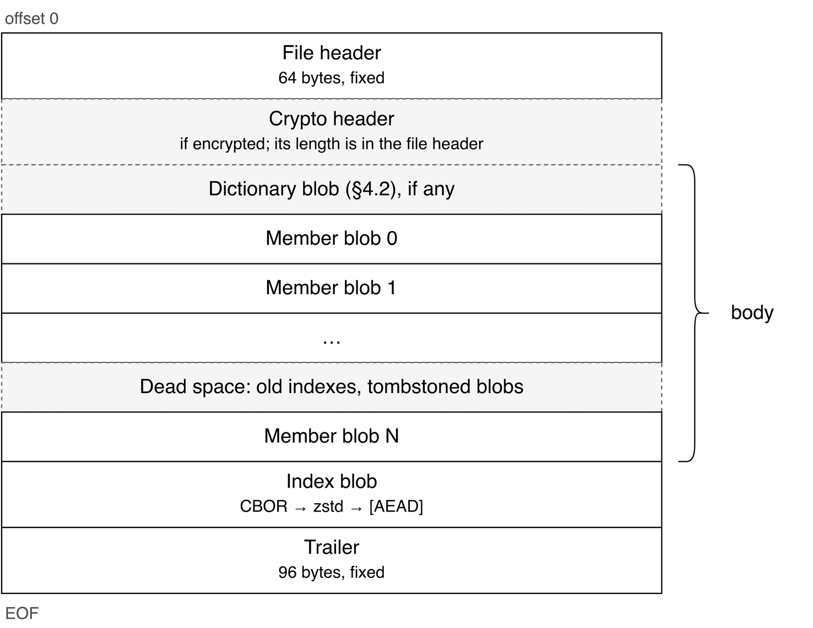
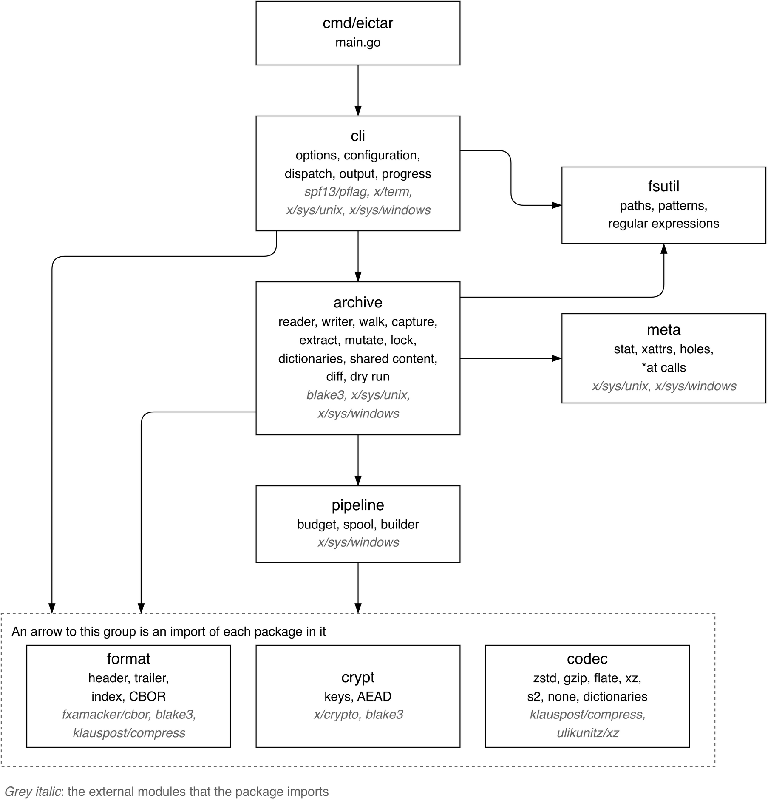
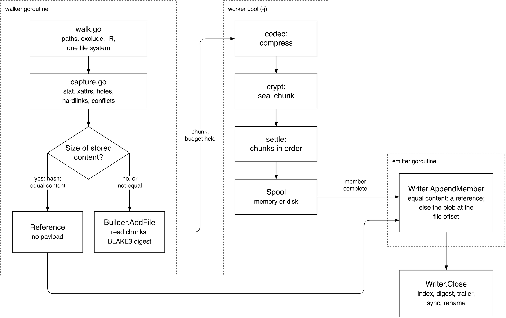
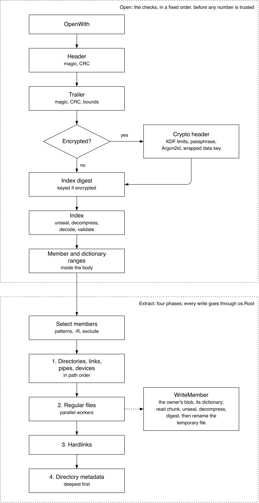
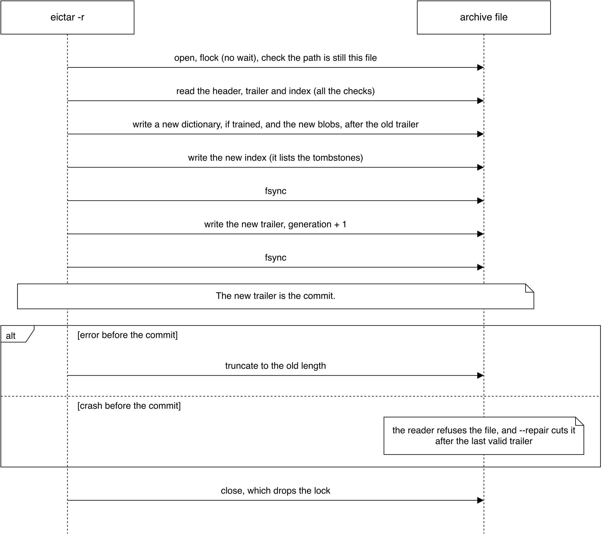

eictar — Design Document
Status
|
M1 to M11 are complete, and v1.1.4 is the current release. The CI workflow passes on Linux, macOS, FreeBSD, NetBSD, OpenBSD and Windows ( §15.1). The six steps of the assurance plan (testing.md §5) are complete. |
Date
|
2026-11-24
|
Applies to
|
v1 (format version 1.0)
|
This document describes the on-disk format, the concurrency model, the
command line and the internal package layout of
eictar, and gives the
reason for each choice.
doc/format.md is the specification of the bytes of
an archive. When the two do not agree,
doc/format.md is correct. When the
code changes, change this document too.
testing.md describes the tests
and the evidence that they give, and
history.md gives the milestones and
the releases. Until 2026-10-15, they were
§13 and
§16 of this document.
problem_statement.md and this document stay in agreement. The statement says
what the program does and
why. This document says
how. A change to a
requirement starts in the statement. Then it comes into
§1.1 of this document.
Contents
1. Scope — decisions, non-goals, open questions and terms.
To learn the format alone, read Part I. To add a feature, read Part II and the
milestone in history.md that owns the feature.
1 Scope
eictar puts files into one archive file. Unlike tar, it compresses each
member separately. When encryption is on, it also encrypts each member
separately. An index at the end of the archive records every member. As a
result, a listing or a selective extraction does not read the member data.
1.1 Decisions
#
|
Question
|
Decision
|
1
|
Container layout
|
The body is append-only. The index is at the end, followed by a fixed-size trailer.
|
2
|
Encryption
|
XChaCha20-Poly1305 AEAD, Argon2id key derivation, and one subkey for each member.
|
3
|
Index encryption
|
Optional, with --encrypt-index. Off by default.
|
4
|
ccrypt fallback
|
Not necessary. Go's x/crypto supplies a modern AEAD and KDF. The requirements no longer include ccrypt.
|
5
|
Dependencies
|
Third-party modules in pure Go are permitted. No CGO and no external binaries.
|
6
|
v1 scope
|
Create, list, extract, append, update, delete, compact, verify, info and repair. Full metadata. A digest for each member.
|
7
|
Paths in an archive
|
At most one live member for each path. -r on a path that is already in the archive replaces it ( §9.2). |
8
|
macOS ACLs
|
Not recorded. They need CGO, and the no-CGO rule stays ( §15.1). Decided for M8, from open question 4. |
9
|
Xattrs across platforms
|
Names are recorded exactly. Each name is applied where the destination takes it, and one notice lists the rest ( §7.7). Decided for M8, from open question 5. |
10
|
Module path
|
github.com/philmalin/eictar ( §12). Decided for the first release, from open question 3.
|
11
|
License
|
GPL-3.0 (LICENSE). Under section 7(e), the license gives no right to use the name "eictar" for a modified version (TRADEMARKS.md).
|
12
|
Archive name
|
The conventional extension is .ect. Create adds it to a name with no extension ( §10.12). |
13
|
Selection by regular expression
|
-R and --exclude-regex. An expression matches the whole stored path ( §10.11).
|
14
|
Dictionaries
|
-Z zstd:train trains a zstd dictionary from the files, and the archive stores it ( §4.2, M10).
|
15
|
Identical content
|
Stored one time. A copy refers to the blob of the member that holds it ( §4.3, M11). |
1.2 Non-goals for v1
Delta storage between versions. When a file changes, the program stores
it again as a whole new member. It marks the old member as dead (a
tombstone). There is no chain of patches.
A chain makes extraction slower as the history grows, and it breaks when a
member in the middle is deleted. This decision has a cost. A file that you
append N times occupies N full copies, until
--compact removes the dead
copies.
§4.5 records the analysis, and why delta storage is not adopted.
Incremental archives, as in tar --listed-incremental. That feature
keeps a snapshot of a tree so that the next run stores only the changes.
It is a feature above the format. It can come later with no change to the
bytes on disk.
Chunk-level deduplication. A shared store of chunks, as borg and restic
use. It changes the storage model: members become lists of shared chunks,
not one continuous blob. That needs a chunk index, reference counts and a
garbage collector. For these reasons it is not in v1. Whole-file
deduplication is in v1 (
§4.3).
§4.4 records the full analysis and why
the design leaves chunk deduplication out.
Public-key recipients (as in
age). The format keeps space for them
(
§6.2).
Pipes. The program cannot read or write an archive through a pipe. The
reader starts at the end of the file, so the file must be seekable.
Signatures on the whole archive. In v1, integrity comes from the digest
of each member and from the AEAD tags.
1.3 Open questions
This table lists the decisions that are not made yet. With it, a reader can
tell a decided item from an open one. A decided question leaves the table,
and its number is not used again, because code comments refer to the numbers.
Question 1 (one live member for each path) was decided for M6 (
§1.1, row 7).
Questions 4 and 5 were decided for M8 (
§1.1, rows 8 and 9). Question 3 was
decided for the first release (
§1.1, row 10).
#
|
Question
|
Sections
|
Needed by
|
2
|
Interleaved -C. tar accepts -C a x -C b y and changes directory between the path arguments. That needs the argument order, which the option parser does not keep. Until this question is decided, more than one -C is a usage error.
|
|
no milestone
|
1.4 Terms
Each term has one meaning in this document.
Term
|
Meaning
|
member
|
One entry in the archive: a file, a directory or a link.
|
blob
|
The bytes of one member's content in the body of the archive.
|
owner
|
The member whose blob holds the content that another member shares ( §4.3). |
dictionary
|
Text that zstd uses as the start of each chunk, stored in the archive ( §4.2). |
chunk
|
A fixed-size piece of a member's content. Each chunk is compressed, and sealed, separately.
|
index
|
The catalog of all members, stored near the end of the archive.
|
trailer
|
The fixed 96-byte record at the end of the file. It points to the index.
|
generation
|
A counter that increases each time the program writes a new index.
|
tombstone
|
A member marked dead. Listings ignore it. Its blob stays until --compact.
|
seal
|
To encrypt and authenticate with the AEAD. "Unseal" is the reverse.
|
digest
|
A BLAKE3-256 value of some bytes. In an encrypted archive, the digest of content is keyed ( §6.2). |
reader, writer
|
The parts of the program that open and create archives.
|
Part I — The format on disk
Sections 2 to 6 describe the bytes, and give the reasons for them.
doc/format.md gives the same bytes as rules only, and it is the contract
for every implementation. The sections after section 6 describe what this
implementation does.

The layout of an archive file
The reader opens an archive in this sequence:
Read the file header at offset 0 and check it.
Read the trailer from the last 96 bytes and check it against the header
and the file size.
If the archive is encrypted, read the crypto header and derive the keys
(
§6.2).
Read the index bytes that the trailer points to.
Check the index digest that the trailer records (
§6.4).
If the index is sealed, unseal it. Then decompress it and decode it.
Check the byte range of every member and dictionary against the archive.
Step 7 exists because Index.Validate has no file to compare with. A blob
must start at or after the body and end at or before the index. A
member that points into the header, into the index, or past the end of the
file is a corrupt index. Without this step, a bad range can return the wrong
bytes as file content.
Member blobs are
continuous and
unordered. The format does not tie
the order of blobs to the order of the paths on the command line. Thus the
writer can accept the member that a worker finishes first (
§8).
All integers on disk are little-endian, except where this document says
otherwise. The chunk counters in AEAD nonces are big-endian, as is usual for
AEAD stream constructions.
3 Fixed structures
Off
|
Size
|
Field
|
Notes
|
0
|
8
|
magic
|
45 49 43 54 41 52 1A 0A = "EICTAR\x1a\n"
|
8
|
2
|
format_major
|
1
|
10
|
2
|
format_minor
|
0
|
12
|
4
|
header_flags
|
bit 0: the archive is encrypted (format.HeaderFlags)
|
16
|
8
|
created_unix_nanos
|
the creation time of the archive
|
24
|
16
|
archive_uuid
|
random. The key schedule and the index digest use it.
|
40
|
4
|
crypto_header_len
|
0 when not encrypted. Maximum 64 KiB ( §6.2). |
44
|
16
|
reserved
|
must be zero
|
60
|
4
|
crc32c
|
of bytes 0..59
|
Flags and reserved bytes are for later versions. A reader refuses a bit of
header_flags that it does not know, and a reserved byte that is not zero.
The error is a version that it does not know, with the message that the
archive needs a newer eictar. Thus a later version can mark a change that an
older reader must not ignore, such as a new kind of member, with a flag. A
change that an older reader can ignore raises format_minor, which a reader
accepts above its own. Readers before v1.0.4 do not make the check: they
accept any flag and any reserved byte, and an archive that needs the check
fails in them later, as a corrupt index.
The magic follows the idea of the PNG signature. The \x1a stops the display
of the file by the type command of DOS and Windows. The \n shows a
transfer in text mode, which changes line endings, because the magic is then
wrong.
3.2 Trailer (96 bytes, the last 96 bytes of the file)
Off
|
Size
|
Field
|
Notes
|
0
|
8
|
trailer_magic
|
"EICTRAIL"
|
8
|
2
|
format_major
|
must be equal to the header
|
10
|
2
|
format_minor
|
must be equal to the header
|
12
|
4
|
trailer_flags
|
bit 0: the index is sealed. Bit 1: the index is compressed. (format.TrailerFlags)
|
16
|
8
|
generation
|
increases each time an index is written
|
24
|
8
|
index_offset
|
|
32
|
8
|
index_length
|
bytes on disk
|
40
|
8
|
prev_index_offset
|
0 if there is none. For recovery ( §9). |
48
|
8
|
live_member_count
|
tombstones not included
|
56
|
32
|
index_digest
|
BLAKE3-256 of archive_uuid, generation and the index bytes on disk. Keyed when the archive is encrypted ( §6.4). |
88
|
4
|
reserved
|
zero
|
92
|
4
|
crc32c
|
of bytes 0..91
|
The reader checks
trailer_flags and
reserved as it checks the header
(
§3.1). A trailer from a newer version is not damage, so
--repair does not
cut the archive back to a generation that this version can read (
§9.5).
The writer writes the trailer with one
write call. That write is the
commit point for the whole archive (
§9).
The two flag words are different Go types, HeaderFlags and
TrailerFlags. Both use bit 0 of a uint32, and both are about encryption.
With plain integers, trailer.Flags & FlagEncrypted compiles and gives the
wrong answer without an error. With different types, it does not compile.
4 Member payloads: chunks and compression
The writer divides the content of each member into plaintext chunks of
chunk_size bytes. The default is 4 MiB, and
--chunk-size changes it. The
last chunk can be shorter. The writer compresses each chunk separately. If
the archive is encrypted, it then seals each chunk separately (
§6.3):
plaintext chunk -> compress -> [seal] -> bytes appended to the member's blob
The chunks are independent. No compressor state and no cipher state goes
across a chunk boundary. For one large member, this independence gives four
things:
parallel compression
parallel decompression
extraction of a byte range
authentication that streams, with no need to hold the whole file in memory
A member that is smaller than chunk_size is one chunk, and it loses
nothing.
The body has no framing. The index records the length on disk of each
chunk (
§5.2). Thus the body is only data: no headers, no lengths and no
separators between members. There is a cost, which
§9 records. If the index
is lost, a scan cannot recover the archive, because there is nothing to find.
4.1 Chunks that compression makes larger
Some chunks compress to their own size or more. The writer stores such a
chunk as plaintext. No flag records this, and no flag is necessary. A
compressed chunk is always shorter than its plaintext. Thus this test has
only one meaning, and the reader uses it:
on-disk length == plaintext length -> the chunk is stored
This rule costs nothing. It also keeps an archive of data that is already
compressed from growing larger than the data.
When the archive is encrypted, the rule applies to the unsealed bytes. A
sealed chunk is its payload plus a 16-byte Poly1305 tag. The reader unseals
the chunk first. Then it compares the unsealed length with the plaintext
length. This is the same test as on-disk length == plaintext length + 16,
but it has no tag arithmetic to get wrong.
4.2 Dictionaries (M10)
A codec that compresses each file alone cannot use what the files have in
common: license headers, imports, and other text that many files repeat.
tar | zstd compresses one stream, so it stores such text one time. A
dictionary gives most of that result, and the members stay independent. The
writer trains a dictionary from samples of the files. Then each chunk is
compressed as if the dictionary came before it, and text that the
dictionary holds costs a few bytes.
A measurement on 441 Go source files of 15 KiB on average, at the strongest
zstd level, gave these sizes:
Method
|
Size
|
each file alone
|
22.6%
|
each file alone, with a dictionary
|
19.4%, and 21.2% with the dictionary itself
|
one stream
|
17.3%
|
The dictionary has a fixed cost. Thus the gain grows with the number of
files. For large files and for data that is already compressed, the gain is
almost zero. On the module cache of this project, 232 MB in 2607 files, the
best dictionary saved 0.4%. A dictionary of 1 MiB made that archive 0.4 MB
larger than one of 112 KiB: the dictionary bytes cost more than they saved.
-Z zstd:train makes a dictionary (
§10.2). Only zstd has dictionaries. The
library
klauspost/compress/dict trains it. The library calls its trainer
experimental. A poor dictionary costs ratio, not correctness: each member's
digest is still checked, and the zstd frame names its dictionary.
The size bounds the whole dictionary. The trainer's own size is that of the
content only, and the header and the tables add about 100 bytes. Thus when
the result is too large, the writer trains again with less content. Without
this rule, train=1M gives a dictionary above the 1 MiB limit. The index
check then refuses the archive at the end of the run.
Training is a pass before the compression. The writer walks the paths,
with the same filters, and makes a list of the regular files and their
sizes. It takes the first 32 KiB of each file as a sample. When the samples
are more than 100 times the dictionary size, it takes every k-th file, with
the smallest k that fits. The pass walks two times: the first finds the
files and their sizes, and the second reads the samples that the first
chose, while the walk holds their directories (
§14.5). For
train=auto, the budget is 100 times 1 MiB,
the largest size. Thus the choice of samples depends only on the tree.
The trainer of klauspost/compress v1.20.3 to v1.20.5 is not deterministic. The
same samples give a different dictionary on each run. The builder in
dict/builder.go collects its candidate strings from Go maps, and the order
of a map changes from run to run. Its main sort does not use a strict
order, and two other sorts have no rule for ties. Thus the order of the map
decides the result. On 1500 YAML files, 10 runs gave 10 different
dictionaries. The archive size changed by up to 0.1%, and train=auto
chose 8 KiB on some runs and 12 KiB on others. The archives with 8 KiB were
about 3% larger. A poor choice
costs ratio, not correctness: the archive stores the dictionary that it
uses.
The branch
dict-deterministic of the fork of the library (
§15.2) corrects
this. It sorts the candidates by hash before the main sort, and breaks ties
by hash. A test in the library builds each kind of dictionary four times
and compares the bytes. On seven trees, the fixed trainer chose the same
size on each run. Each archive size was in the range of the release
builds. A local build with
build-fork.sh has the fix. A release build
does not have it until a release of the library has it.
The archive is still not the same byte for byte from run to run. With more
than one worker, the members go into the archive in the order that they
finish (
§8), so their offsets change. With
-j 1 and the fixed trainer,
two runs gave the same size.
Then the writer trains the dictionary, and the normal walk compresses the
files with it. A file that changes between the two walks costs ratio only.
If the trainer cannot make a dictionary, for example from too little data,
the writer compresses without one, and prints a notice.
The best size depends on the files. A larger dictionary holds more of
the text that the files share, but the archive stores each byte of it.
Above the best size, a byte of dictionary saves less than one byte of
payload. A sweep of sizes from 4 KiB to 1 MiB on 29 trees found the best
size of each tree. The table gives how much larger each choice made the
archive than the best size, for the dictionary and the payload together:
Choice
|
Mean
|
Worst
|
no dictionary
|
+10.7%
|
+69% (YAML)
|
112 KiB for each tree
|
+7.3%
|
+35% (Go, 17 files)
|
sample bytes / 64, a rule from the file sizes
|
+0.55%
|
+6.4% (JSON)
|
train=auto
|
+0.25%
|
+1.2% (Go, 554 files)
|
Fourteen trees were Go source, from 50 KB to 232 MB, and the documents of
this project. Fifteen were generated: JSON, YAML, HTML, Markdown, CSV, logs,
random data, and mixtures of small and large files. The results:
A small tree needs a small dictionary, or none. 112 KiB is more than
all the text that 100 small files share. On such a tree, the archive was
larger than with no dictionary.
Structured files share little text. JSON and YAML gained 30% to 41%
from a dictionary of 16 KiB to 32 KiB. A larger one cost more than it
saved, for 3000 files and for 20000.
A rule from the file sizes cannot see how much text the files share.
Sample bytes / 64 was good on source code, but it chose 640 KiB for JSON.
Thus the writer measures.
A mixture of small and large files needs no special case. Each file
gives at most 32 KiB of samples. Thus a few large files do not hide many
small ones, and the small files are where the dictionary helps. Random
data gives a gain of zero, and the measurement then chooses a small
dictionary or none.
train=auto measures the size. train alone is
train=auto, the
default form (
§10.2). The writer:
Holds out every fourth sample. The trainer does not see these. A sample
that the trainer saw makes a large dictionary look better than it is.
Makes the candidates: 4 KiB, 8 KiB, and each power of 2 up to 1 MiB, but
not above half of the sample bytes of the tree.
For each candidate, trains a dictionary from 20 times its size of the
other samples. Then it compresses up to 1 MiB of the held-out samples, at
the level of the archive, with and without the dictionary.
Calculates the net gain of the candidate: the bytes saved, times the
sample bytes of the tree divided by the held-out bytes, less the size of
the dictionary.
Walks the candidates in order of size. A larger candidate wins only when
its net gain is more than 2% above the best. With the trainer of the
release, the measurement changes by about 1% from run to run, and a
smaller dictionary costs less time. The
walk stops at the second candidate in a row that does not win.
Uses no dictionary when no candidate has a positive net gain, and prints
a notice.
Trains the final dictionary at the chosen size, from 100 times its size
of samples, as for train=SIZE.
The candidates train in parallel, at most
-j at once, with the bound
for memory of the encoder (
§8.2). A candidate starts only when the
candidate two places before it is done, and has not stopped the walk. The
training time doubles with each size. Thus a candidate after the stop point
costs as much as all the smaller ones together, and the rule lets only one
run. More parallel candidates made the measurement slower, not faster.
Results after the stop point are not used, so the choice does not depend on
-j.
Other settings were worse. Candidates trained on 10 times their size
chose worse sizes. Trial compression at level 3 chose worse sizes, +4.6% at
worst. The final dictionary needs 100 times its size: a dictionary from 20
times saved 3% to 10% less, which was 1.8% of a JSON archive.
The measurement costs time. The table compares train=auto with a fixed
112 KiB, one run after the other, at the default -j:
Tree
|
112 KiB
|
train=auto
|
Size chosen
|
Go, 120 files, 0.9 MB
|
0.9 s
|
2.1 s
|
16 KiB
|
Go, 2607 files, 232 MB
|
8.0 s
|
14.3 s
|
64 KiB
|
JSON, 3000 files
|
8.7 s
|
7.6 s
|
16 KiB
|
JSON, 20000 files
|
21.4 s
|
21.5 s
|
32 KiB
|
YAML, 1500 files
|
2.0 s
|
8.8 s
|
12 KiB
|
random data
|
2.9 s
|
0.2 s
|
none
|
all 29 trees
|
106 s
|
140 s
|
|
Most trees took 1 to 2 times as long. The worst was the YAML tree, at 4.4
times: its gain is flat from 16 KiB up, and the walk trains up to 256 KiB
before it stops. A tree with a small best size can be faster than 112 KiB,
because the final training is smaller.
The gain over no dictionary depends on the files. The table gives the
size that train=auto saved against no dictionary, for the dictionary and
the payload together:
Tree
|
Saved
|
YAML, 1500 files
|
40.8%
|
JSON, 150 to 20000 files of 0.3 KB to 3 KB
|
25% to 32%
|
Go, a small package that repeats much code (pflag, 88 files)
|
18.6%
|
Markdown, and HTML with a shared header and footer
|
13%
|
Go, 120 to 950 files
|
5% to 8%
|
mixtures where large files hold most of the bytes
|
0.4% to 2.3%
|
large files: CSV, logs, a large Go module
|
0.3% to 0.6%
|
Go, 2607 files, 232 MB
|
0.4%
|
random data, trees of 19 files or fewer, the documents
|
0%: no dictionary
|
Three things decide the gain:
The size of the files. zstd compresses each file alone, and a small
file starts with no history. The dictionary gives it the shared text at
the start. In a file of tens of KB, zstd finds most repeats in the file
itself.
The text that the files share. The YAML files share almost all their
structure, and differ only in values. The Go files share license headers,
imports and some idioms, but their bodies are different.
The part of the bytes in small files. In a mixture of 2000 small JSON
files and 40 large logs, the JSON files gained about 30%. But they hold
4% of the 110 MB, so the archive gained 1.8%.
A fixed size of 112 KiB made 9 of the 29 trees larger than no
dictionary, by up to 35%. With train=auto, no tree was larger than with
no dictionary. The measurement is an estimate, so this is not certain, but
a wrong choice costs little: the worst tree was 1.2% above its best size.
The time is the trade-off. Without a dictionary, the 120 Go files took
0.2 s, the 20000 JSON files 0.7 s, and the 232 MB tree 0.8 s, against the
times of train=auto in the table above. The trainer uses one
thread for each candidate, and it takes most of the time. Thus train is
good for many small, similar files. For a tree of large files, it costs
seconds and saves almost nothing.
A dictionary does not give the result of one stream (the first table of
this section). The dictionary holds text from the start of the files. One stream
also finds repeats deep inside the files, and between them.
The archive stores each dictionary as a blob, before the members of the
generation that uses it. The index lists the dictionaries, and each catalog
entry names the dictionary of its codec (
§5.1). A reader needs only the
dictionary of the members that it reads.
In an encrypted archive, the dictionary is content. It holds pieces of
the files, so the writer seals it with a key of its own (
§6.3). Its digest
in the index is keyed, like the member digests (
§6.2).
-r and -u with train use the archive's newest dictionary, when
there is one. A few changed files are a poor sample, and the dictionary from
the whole tree fits them better. When the archive has no dictionary, the
operation trains one from its own files. Without train, a new member uses
no dictionary. --recompress zstd:train always trains a new dictionary,
from the members of the archive.
A dictionary stays while a member uses it. Compact keeps a dictionary
that a kept member uses, and drops the others (
§9.3).
--verify checks each
dictionary that a selected member uses.
--info shows each dictionary, its
size, and the number of live members that use it.
4.3 Identical content (M11)
A tree often holds files with the same content. Examples are copies of a
library in two places, generated files, and files that a later version did
not change. A member whose content is the same as that of a member already
in the archive does not need a blob of its own. It refers to the blob of
that member, the owner.
A library tree of 8514 files had 1023 copies, which took 26.8 MB of 245 MB.
With references and a dictionary, its archive is 214 MB.
tar | zstd --long=27 makes 180 MB of the same tree, and
§4.5 explains
most of the difference.
A reference is not a hardlink. A hardlink is one file with two names, and
extraction makes it again as one file. A reference is two files, each with
its own metadata, and extraction makes two files. The archive shares their
bytes only.
Two members have the same content when their payloads are equal (
§5.2):
the same size, the same sparse map, and the same digest. The digest is
BLAKE3-256. Thus two different payloads with one digest are not a practical
risk.
The emitter finds each duplicate. It is the one goroutine that writes
blobs (
§8). It keeps a map of the owners of the archive, by digest, size and
sparse map. When a member's payload is already in the map, the emitter does
not write its blob, and the member records a reference to the owner. This
rule catches two copies in one run too, but the workers compress the copy
for nothing.
The emitter uses an owner that the run wrote, or an old owner that passed
its check (below). Otherwise it writes the blob, and the new member becomes
the owner for the rest of the run.
A file whose size is the size of an owner is hashed first. A duplicate
must have the size of its owner. Thus a file with a size that no owner has is
compressed at once, with no extra read. A file with the size of an owner is
read and hashed before it goes to the workers. If its payload is in the map,
it becomes a reference, and nothing is compressed.
BLAKE3 is much faster than any codec, so the extra read costs little. Two
copies that one run adds at the same time fall back to the rule of the
emitter.
The owner is always a member with a blob. A reference never names
another reference, so there are no chains. The owner can be a tombstone,
as the target of a hardlink can (
§9.2). Compact keeps a tombstone that a
live reference names. In an encrypted archive, the chunk AAD binds the id of
the owner (
§6.3). Thus the reader unseals the blob with the owner's key and
the owner's id.
References need no new secret. Two members with the same content already
have the same keyed digest (
§6.2). Without
--encrypt-index, a person with
the archive can see that equality in the digests too.
The other operations follow the owner. Extraction and
-O decode the
owner's blob.
--verify decodes each blob one time, and checks that each
reference has the digest of its owner.
-u --update-mode=digest compares
with the owner's content.
--recompress encodes each owner again, and a
reference stays a reference. A change of passphrase copies the blobs, so the
references stay valid (
§9.7).
One damaged blob now damages each member that refers to it. This is the
cost, as for hardlinks. The damage is always found: the digest check and the
AEAD tag refuse the blob, and each member that uses it gives exit 3. But no
member that uses the blob can be extracted. --no-dedup stores each copy in
full, for a user who wants damage to stay inside one file.
A run checks an old owner before it first refers to it. The match uses
the digest that the index records, not the blob. Thus a blob that became
damaged after it was written can still match a new file. Before a run refers
to an owner of an earlier generation for the first time, it decodes that
owner's blob and checks its digest. If the check fails, the program warns,
stores the new file in full, and does not use that owner again in the run.
A decode is much faster than a compression. An owner that the run wrote
itself needs no check.
4.4 Chunk-level deduplication (not adopted)
This section records a design that was examined and not adopted. It
explains how chunk deduplication works, what it costs, and why eictar does
not use it.
How it works. A rolling hash (for example FastCDC) moves over the
content of a file. The writer cuts a chunk where the hash matches a pattern.
The cut points depend on the content, not on the offset. Thus an insert near
the start of a file moves one boundary, and the chunks after it do not
change. The fixed chunks of
§4 do not have this property: an insert moves
every chunk after it. A typical chunker has an average chunk of about 1 MiB,
with a minimum and a maximum.
The writer hashes each chunk and keeps a map of the chunks that the archive
holds. A chunk that is in the map is not written again. A member is then a
list of chunk ids, not one blob. borg and restic work in this way.
Some parts of eictar already agree with this model. Chunks are compressed
and sealed separately (
§4), so parallel work and range reads stay
possible. Each generation writes a full index, so compact can find the
chunks that live members use, and copy only those. No reference counts are
necessary.
What it changes in the format.
The index gets a chunk table: offset, length on disk, plaintext length,
codec and digest of each chunk. A member gets a list of chunk ids in place
of off, len and chunks.
The AEAD rules of
§6.3 bind the member id and the chunk index. A shared
chunk has no single member. Each chunk needs its own salt or random nonce,
and an AAD that binds the chunk. The member's ordered list of chunks, in
the authenticated index, then protects the order and the length.
From v1.0.4, a reader refuses a header flag that it does not know (
§3.1).
Thus a chunked archive can set a flag, and such a reader says that the
archive needs a newer eictar. A reader before v1.0.4 ignores the flag,
and refuses the index as corrupt (
§5.2), with no message that a newer
program made it. For a clear message in those readers too, a chunked
archive needs
format_major 2.
An archive with chunk deduplication off can stay format 1.0, byte for byte.
Thus the program can support both: the mode is set at create, append and
update follow the mode of the archive, and --compact --recompress can
convert. The design is possible. The question is whether it is useful.
Where it helps. Large files that change in place or grow, and that the
user adds again with
-u: virtual machine disks, database files,
mailboxes, logs, and uncompressed tarballs or images. A small change then
stores a few chunks, not a new copy. This is most of the gain that delta
storage (
§4.5) wants, with no chain of patches.
Where it does not help.
Source code and text. Most source files are smaller than one chunk.
Each file is then one chunk, and that is whole-file deduplication, which
§4.3 already gives. Text files share small pieces, such as license
headers, imports and boilerplate. These are far below any useful chunk
size. Compression finds them, and the trained dictionary (
§4.2) is the
tool for them. Smaller chunks (8 to 16 KiB) make the index about 100 times
larger, and each chunk compresses less well.
Compressed formats. PDF streams, JPEG, video, zip, and office files
such as docx and xlsx are compressed inside. When an application saves
such a file again, the bytes change through the whole file, so few chunks
repeat. An incremental save of a PDF is the exception: it appends to the
end. An identical copy is already a reference (
§4.3).
What it costs.
Index size. Each chunk needs about 45 bytes in the index: a 32-byte
digest, an offset, a length and a codec. Digests do not compress. One TB of
content in chunks of 1 MiB gives about one million chunks and about 45 MB
of index. Each append writes a full index (
§9.1), so each
-u on a large
archive adds that much.
Writer memory. The writer keeps the map of all chunks. At 1 TB, that
is 50 to 100 MB, and it must fit in the memory budget of
§8.1.
Information to an observer. §14.1 says that a person who can put files
into the tree, and see the size of the archive, can test a guess of a
whole file. With chunks, the person can test a guess of part of a file.
Chunk lengths are also a fingerprint of the content. borg and restic give
the chunker a secret seed for this reason. An encrypted archive needs the
same.
Damage. One damaged chunk damages each member and each version that
uses it. The damage is found, but more files are lost than with
§4.3.
Fragmentation. The chunks of one member are spread over the body.
Extraction seeks more, which is slow on a disk with heads.
Code. The reader, verify, compact, --recompress, repair, change of
passphrase and the stress tester all change. The work is of the same order
as encryption (M4).
Decision. eictar does not add chunk deduplication. The typical use of
eictar is to archive a tree of source, documents and media. For that use,
whole-file references (
§4.3) and the dictionary (
§4.2) already give most of
the gain. The costs above apply to every archive. The gain applies only to
large files that change and that are archived again and again, which is the
work of a backup repository.
What can change the decision. A measurement on real data. A tool can run
a content-defined chunker over two snapshots of a tree and report, without a
change to the format:
the bytes that whole-file deduplication saves
the extra bytes that chunks of 64 KiB, 256 KiB and 1 MiB save
the index size that each chunk size costs
If the extra saving is large, compared with the index cost, the design can
come back as format 2.
4.5 Delta storage between versions (not adopted)
This section records a design that was examined and not adopted, as
§4.4
does.
What it is. A delta member is compressed against the content of another
member, its base. zstd does this with the base as a raw dictionary
(zstd --patch-from). The content that the two versions share costs almost
nothing. A member records the id of its base, and extraction decodes the
base first.
The measurement. On the library tree of
§4.3, 553 names of large files
have more than one version, and the versions take 109.8 MB.
tar | zstd --long=27 compresses each later version against an earlier one
in its stream, and it is about 30 MB smaller than eictar for that reason.
Per-file compression cannot see across files, whatever the chunk size or the
dictionary.
How to find a base. There are three signals:
The same path in an earlier generation. When append or
-u replaces
a member, the old member is a tombstone (
§9.2). Its content is the last
version of the file. The index names it, so the signal is exact and free.
Paths that are equal except for a version. The library tree holds
golang.org/x/sys@v0.47.0/unix/zerrors_linux.go and the same path with
v0.48.0. The writer replaces each token that looks like a version with a
placeholder, and groups the paths that are then equal. This works inside
one create, with no extra read.
Similar content. A sketch of each large file (for example MinHash of
its content-defined chunks) estimates how much two files share. This finds
a renamed version, but each file must be read and the sketches indexed.
A signal only gives a candidate. The writer compresses the first chunk with
and without the candidate, and keeps the delta only when it saves enough.
What it costs.
A member is no longer independent: extraction needs its base first.
Without a limit, it needs a chain of versions. Each chunk must stay
independent too, so chunk i uses the region of the base near the same
offset, and a large insert near the start loses the gain.
Delete and compact must keep each base that a live delta uses. Damage to a
base reaches each delta that uses it.
base is a field that an old reader must not ignore. An archive with
deltas sets a header flag, or uses
format_major 2, as
§4.4 describes.
A person who can put files into the tree, and see the size of the archive,
can test a guess against a similar file, not only an identical one (
§14.1).
Why there is no gain for updates. eictar cannot list or extract a
tombstone. Thus an old version is only dead space until --compact. A delta
against it (signal 1) makes the archive grow less between two compacts, and
that is all. At the compact, the program must keep the tombstone because the
delta needs it, which keeps the space that compact must remove, or encode the
delta again in full, which loses the gain. For a user who compacts, the
deltas are useless, and they make compact more complex.
The gain lasts only when both versions are live: trees that hold versions
side by side, such as module caches, vendored libraries, and release or
dated directories (signal 2). Compact keeps both, and nothing else can
remove the copy.
Decision. eictar does not add delta storage. The typical use does not
hold versions side by side, and for updates, --compact removes the old
versions with no change to the format.
What can change the decision.
A use with many versions side by side. A measurement can pair the files of
a tree by signal 2, and report the bytes with and without
zstd --patch-from, before any change to the format.
A history feature: list and extract a file as it was in an earlier
generation. Then the old versions have a use, and a delta against them
(signal 1) saves space that compact would otherwise have to keep.
5 The index
5.1 Schema
The index uses CBOR (github.com/fxamacker/cbor/v2). CBOR stores the binary
values of extended attributes without base64 growth. New map keys can extend
the schema, and decoding is fast.
After the writer encodes the index, it compresses the index with zstd. The
index_compressed trailer flag records this, so an uncompressed index is
also readable. If
--encrypt-index is given, the writer then seals the index
as one AEAD message (
§6.3).
Index := {
"v": 1,
"gen": <uint64>,
"codecs": [ CodecSpec, ... ], # catalog, referenced by array position
"dicts": [ Dict, ... ], # dictionaries (§4.2); absent when none
"members": [ Member, ... ],
}
CodecSpec := { "name": "zstd", "params": { "level": 9, "long": 27 },
"dict": <uint32> } # the id of a Dict; absent when none
Dict := {
"id": <uint32>, # the zstd dictionary id, the same as in the dictionary
"gen": <uint64>, # generation that added it
"size": <uint32>, # plaintext length, at most 1 MiB
"digest": <32 bytes>, # BLAKE3-256 of the plaintext, keyed as member digests are
"enc": { "salt": <16 bytes> }, # absent when not encrypted
"off": <uint64>, # blob offset
"len": <uint64>, # blob length on disk: size, or size + 16 when sealed
}
Member := {
"id": <uint64>, # stable, monotonic, never reused
"gen": <uint64>, # generation that added this member
"path": "src/main.go", # slash-separated, relative, cleaned
"type": "reg"|"dir"|"symlink"|"hardlink"|"fifo"|"sock"|"chardev"|"blockdev",
"mode": <uint32>, # permission bits + setuid/setgid/sticky, at most 07777
"uid": <uint32>, "gid": <uint32>, # absent with --no-owner
"uname": "psm", "gname": "psm",
"mtime": <int64 ns>, "atime": <int64 ns>, "ctime": <int64 ns>,
"size": <uint64>, # logical plaintext size
"link": "../target", # symlink target
"hardlink":<uint64>, # member id of the first link
"data": <uint64>, # member id of the owner of this content (§4.3)
"rdev": [major, minor],
"xattrs": { "user.foo": <bytes>, ... }, # POSIX ACLs are stored here
"sparse": [ { "off": <uint64>, "len": <uint64> }, ... ], # data segments; absent = dense; the blob holds only these
"digest": <32 bytes>, # BLAKE3-256 of the payload (§5.2), keyed when encrypted
"codec": <int>, # index into "codecs"; -1 = stored
"chunk": 4194304, # plaintext bytes per chunk; absent when empty
"enc": { "salt": <16 bytes> }, # absent when not encrypted
"off": <uint64>, # blob offset
"len": <uint64>, # blob length on disk
"chunks": [ <uint32>, ... ], # on-disk length of each chunk
"dead": true # present only on tombstones
}
The catalog stores each codec's parameters as the values in effect, not as
the text that the user typed. Many members can share one catalog entry. A
catalog entry with dict is a different entry from the same codec without
it, and a reader needs dict, but not params, to decode.
A dictionary blob has no chunks. It is one message, and it is not
compressed, because a dictionary is itself dense. The writer takes each id
from a random number, and takes another one if the archive has it already.
uid and gid are optional. With --no-owner they are absent, which is
different from uid 0. A stored zero means root to a reader that restores
ownership. The writer records atime and mtime. It does not record ctime,
because no program can restore it.
A member with
data is a regular file with no blob of its own (
§4.3). It has
no
off,
len,
chunks,
chunk,
enc or
codec, and its
size,
sparse and
digest are those of its owner. The owner is a regular file
with a blob, and without
data.
For a file with holes,
size is the logical length, and
sparse lists the
data segments. The blob stores only the bytes of those segments, back to
back. The digest covers those stored bytes. The index covers the map, so the
index digest protects it (
§6.4).
5.2 The chunk table
chunk is a field of the member, not of enc. A plaintext archive also has
chunks, and its reader needs the same number to find where each chunk ends.
A member with no content has neither chunk nor chunks.
The index validator checks that the chunk table agrees with the member:
The chunk lengths must add up to len.
The payload must fit in len(chunks) chunks of chunk bytes, and must not
fit in one chunk less. The payload is size for a dense file, and the total
of the sparse segments for a file with holes.
chunk must not be more than MaxChunkSize (256 MiB).
Without the second rule, a reader has no expected size for each chunk. A
decompression bomb needs exactly that gap.
The third rule is a security limit. A reader sizes its decode buffer from
chunk, and chunk comes from the index, which an attacker can write. In a
test, a 200-byte archive that claimed a 2 GiB chunk size made the reader
allocate 2 GiB. The chunk held five bytes, and extraction does this once for
each worker. The limit is far above the 4 MiB default. The program applies
the same limit to --chunk-size, so the error comes when an archive is
created, not when someone reads it.
A regular file must have a digest. The wire schema makes the digest
optional, but the validator refuses a reg member without one. Only the
digest catches a member whose offset or chunk table points at the wrong
bytes. Without it, a damaged index gives wrong content with no error.
The validator also checks that each field belongs to the member's type:
Only a symlink has link, and a symlink must have it.
Only a hardlink has hardlink, and it must name a reg member. That rule
excludes chains, cycles and links to directories.
Only a
reg member has
data. It names an owner with a blob, with the
same size, sparse map and digest, and without
data itself (
§4.3). The
member has no blob, chunks, codec or key of its own.
A dictionary has a unique id that is not 0, a size of 1 byte to 1 MiB and
a digest. A catalog entry names only a dictionary that the index holds,
and only for zstd. An index holds at most 1024 dictionaries.
Only a device has rdev, and a device must have two values.
Only a reg member has sparse. The segments must be in order, must not
overlap or be empty, and must end inside size.
mode must not be more than 07777. The file type is the type field,
never mode bits.
An xattr name has 1 to 255 bytes, a value has at most 64 KiB, and a member
has at most 1024 xattrs. These are the kernel's own limits.
A field on the wrong type is not harmless. A reader that acts on a field,
not on the type, can do what the archive did not mean.
The validator does
not require canonical member paths. A hostile archive
must still list, so that a user can see what they received. Extraction is
the step that refuses a bad path (
§7).
5.3 CBOR policy
The library defaults are wrong for this format in four ways.
src/internal/format/cbor.go sets the correct behavior:
The encoder sorts map keys bytewise. Go map order changes from run to
run. Without sorting, one index encodes to different bytes each time, but
the trailer records a digest of those bytes. Thus the format requires
determinism.
The decoder accepts invalid UTF-8. A POSIX path is a sequence of bytes,
not text. The library default refuses a text string that is not valid
UTF-8. With the default, you can archive a Latin-1 file name but not read it
back.
The array and map limits are explicit. The default limit is 131072
array elements, which limits an archive to 131072 members without a
message. A larger limit alone lets a nine-byte header demand an unbounded
make([]Member, n). Thus the decoder calculates its limit from the input
length, because an element cannot exist without bytes. It also applies a
hard limit,
MaxIndexMembers = 4,194,304 members for each archive. A
larger archive needs the paged index of
§15, not a larger constant.
The decoder refuses indefinite-length items, CBOR tags and duplicate map
keys. The encoder never writes them.
5.4 Size in practice
Before compression, the index uses approximately 200 to 400 bytes for each
member. The chunk table adds 4 bytes for each 4 MiB of content, which is
1 KiB for each GiB. An archive of 1,000,000 files has an index of a few tens
of MiB after compression. That size is acceptable.
§15 describes the next
step if an archive becomes too large for this design.
6 Cryptography
Encryption is optional. When it is off, this section does not apply, and the
archive is exactly what
§2 to
§5 describe. When it is on, it adds a crypto
header (
§6.2) and a seal on each chunk (
§6.3). The chunks themselves do not
change.
6.1 Primitives
Purpose
|
Choice
|
Package
|
Passphrase KDF
|
Argon2id
|
golang.org/x/crypto/argon2
|
AEAD
|
XChaCha20-Poly1305 (24-byte nonce, 16-byte tag)
|
golang.org/x/crypto/chacha20poly1305
|
Subkey derivation
|
HKDF-SHA-256
|
golang.org/x/crypto/hkdf
|
Content digest
|
BLAKE3-256, keyed in an encrypted archive ( §6.2) |
lukechampine.com/blake3
|
XChaCha20 is better than AES-GCM here for three reasons. It is fast without
AES-NI. Its 24-byte nonce removes the risk of nonce collisions. Its pure-Go
implementation runs in constant time on all targets. Appendix A gives the
full comparison.
The crypto header comes directly after the file header. It is
crypto_header_len bytes long. It starts with its own uint32_le length of
the CBOR that follows, so a reader can decode it without trust in the outer
field. crypto_header_len must not be more than 64 KiB. A real crypto
header is a few hundred bytes, and a reader allocates the size in the field
before it decodes anything.
{
"v": 1,
"kdf": "argon2id",
"salt": <16 bytes>,
"time": 3, # Argon2id passes
"memory": 262144, # KiB (256 MiB default)
"threads": 4,
"aead": "xchacha20poly1305",
"key": <72 bytes>, # the data key, wrapped: see below
"recipients": [...] # reserved for public-key mode; absent today
}
A reader that finds recipients refuses the archive. Such an archive is
addressed to public keys that this build does not know.
The archive has a random data key, and the passphrase only wraps it.
Create makes a random 256-bit data key. Every subkey comes from the data key.
The passphrase gives a key-encryption key (KEK) through Argon2id, and the
crypto header stores the data key sealed under the KEK:
dataK = 32 random bytes, made once, at create
KEK = Argon2id(passphrase, salt, time, memory, threads, 32)
key = nonce || seal(KEK, nonce, dataK, aad = "eictar/v1/wrap" || archive_uuid)
nonce = 24 random bytes
indexK = HKDF(dataK, info = "eictar/v1/index" || archive_uuid || generation)
authK = HKDF(dataK, info = "eictar/v1/index-auth" || archive_uuid)
contentK = HKDF(dataK, info = "eictar/v1/content" || archive_uuid)
memberK = HKDF(dataK, info = "eictar/v1/member" || archive_uuid, salt = member.salt)
dictK = HKDF(dataK, info = "eictar/v1/dict" || archive_uuid, salt = dict.salt)
A wrong passphrase gives another KEK, and the seal of key fails its tag. The
reader reports that as a wrong passphrase, before it reads anything else.
Thus the tag also checks the passphrase, and the header needs no other
check value. An
attacker can test a guess offline against the tag, as against any file that a
passphrase protects. The Argon2id parameters exist to make each guess
expensive.
The wrapped key is the reason that a passphrase can change (
§9.7). A change
seals the same data key under a new KEK. Every subkey stays the same, so no
member is sealed again, and every digest stays valid. A passphrase that
gives the master key directly cannot change without a new seal of each
member.
All HKDF instances use SHA-256. The encoding of
generation is
uint64_le
in every key and digest.
member.salt is 16 random bytes, stored in each
member's
enc field. Thus each member has its own key (
§6.3).
The KDF parameters come from the archive, and the reader treats them as
hostile. It refuses time more than 64 and memory more than
4 GiB. It also refuses a zero time or threads, and memory less than
8 KiB for each thread, which Argon2id cannot use. These are damage, with exit
Then it compares the memory with this machine (
§A.3). All of this
occurs
before the prompt for the passphrase. The cost of Argon2id is linear
in
time, approximately 1.8 s for each pass at the memory limit. Without the
time limit, a crafted header that asks for 2³²−1 passes stops a listing for
centuries.
In an encrypted archive, the member digest is keyed. A plain BLAKE3
digest of the content is readable in an index that is not sealed, which is
the default. Anyone with a copy of a file can then find out if the archive
holds it, whatever its name. Worse, anyone can find the content of a small
file with few possible values, such as a PIN or a short answer. They hash
each candidate, and compare. The content is sealed, but its digest gives it away.
Thus in an encrypted archive, the digest of a member is BLAKE3 keyed with
contentK. --verify, -u --update-mode=digest, compact and recompress
work as before, because every member of one archive has the same key. A
digest cannot be compared across two archives, or with a hash made outside
eictar. The digest of a plaintext archive is the plain BLAKE3, as before.
6.3 The AEAD layer
The writer seals each chunk after it compresses the chunk (
§4):
sealed = seal(memberK, nonce, compressed_chunk, aad)
nonce = 16 zero bytes || uint64_be(chunk_index)
aad = uint64_le(member_id) || uint64_be(chunk_index) || final_byte
final_byte = 0x01 for the last chunk of the member, else 0x00
Each member has its own key (
§6.2). Thus a nonce must be unique only inside
one member, and a counter gives that result.
The AAD stops chunks from moving between members or inside one member. A
chunk that is unsealed at the wrong index, or in another member, fails its
tag. final_byte also catches truncation. If trailing chunks are removed, a
different chunk claims to be the last one, and that claim fails its tag.
The order is compress, then seal, because ciphertext does not compress.
§14
describes the small risk that this order causes.
The writer knows which chunk is last only when the next read reaches the end
of the file. Thus the pipeline holds one chunk back until it knows if another
chunk follows (
§8).
The index is sealed as one message with indexK:
nonce = 24 random bytes
aad = uint64_le(generation)
sealed = nonce || seal(indexK, nonce, index, aad)
The index nonce is random, and the sealed index stores it. One
(archive_uuid, generation) pair can get two different indexes. These are
three examples:
You copy an archive, and then you append to the copy and to the original.
An append writes its index, and then fails before its trailer. The next
append uses the same generation.
A compact writes its index, and then its rename fails.
indexK comes from the pair. Thus a nonce that also comes from the pair uses
one key and nonce two times. That exposes the XOR of the two indexes, and the
Poly1305 key that authenticates them. Thus the nonce is random. A random
192-bit nonce cannot collide in practice (Appendix A).
Compact must keep the uuid: the member keys come from it, so a new uuid makes
every sealed blob impossible to open.
A dictionary (
§4.2) is sealed as one message with a key of its own:
dictK = HKDF(dataK, info = "eictar/v1/dict" || archive_uuid, salt = dict.salt)
nonce = 24 zero bytes
aad = uint32_le(dict.id)
sealed = seal(dictK, nonce, dictionary, aad)
The salt is random for each dictionary, so each key seals one message only,
and a fixed nonce is safe. The info string differs from that of a member, so
no dictionary key can be a member key.
6.4 Authenticating the index
When a key exists, the index is always authenticated, sealed or not.
--encrypt-index controls confidentiality only.
The reason is not obvious. The chunk AAD includes member_id, chunk_index
and the final flag. It does not include the path, the mode or any other
field of the index.
Suppose that the members are sealed, but the index is plain and its digest
has no key. Then an attacker with no passphrase can rename a member from
notes.txt to .ssh/authorized_keys. The attacker can also add
an execute bit, point a path at a different blob, or tombstone members. Every
chunk still passes its tag, because no tag covers these fields.
The fix does not change the trailer layout. When the archive is encrypted,
index_digest is a keyed BLAKE3:
index_digest = BLAKE3-keyed(authK, archive_uuid || uint64_le(generation) || index_bytes)
authK = HKDF(dataK, info = "eictar/v1/index-auth" || archive_uuid)
When the archive is not encrypted, the digest has the same input but no key.
The uuid and the generation stop an index and a trailer from moving to a
different archive. With a key, they also stop that move between two archives
that use the same passphrase.
A reader without the passphrase cannot check a keyed digest. Thus eictar asks
for the passphrase for every operation on an encrypted archive, a listing and
--info too, whether or not the index is sealed. It never shows metadata that
it cannot authenticate. A reader with the passphrase refuses any changed byte
of metadata.
A plain index is still readable with a CBOR tool, without eictar. Thus only
--encrypt-index keeps the names and the sizes secret. A user who encrypts
an archive can expect every part of it to need the passphrase. This rule
matches that expectation for eictar itself, and --encrypt-index matches it
for every other tool.
This protection does
not cover a rewrite of the whole file, a rollback
to an older genuine archive, a downgrade to plaintext, or a deletion.
§14.4
describes them.
Part II — Behavior
This part describes what the program does with the format. It covers where
the program can write, how it uses the machine, and how an archive changes.
7 Path handling
This section says what a member path can contain and where extraction can
write. It also says why the program checks paths two times.
§10.4 lists the options
that name a destination. This section gives their meaning.
Two options name a place. You can give only one of them:
-d DIR / --destination DIR extracts into DIR. It applies to
extraction only. If DIR does not exist, the program creates it, with its
parent directories. This is the unzip -d spelling.
-C DIR / --directory DIR changes to DIR first, as in tar. DIR must
exist already. During create, it also changes how the program finds the
paths that follow.
If you give both, the result is a usage error. Both options name the place of
the work, and a wrong guess puts a tree in a place that the user did not
choose. -d together with -O/--to-stdout is also a usage error, because
content on standard output has no destination directory.
In
tar,
-d means
--compare. In
zip, it deletes entries. Neither
meaning causes a problem here. The compare operation of this tool is
--diff, with no short letter (
§9.8).
-d does not select an operation.
Thus
eictar -d out -f a.ect fails the one-operation rule, and it deletes
nothing.
7.2 The archive never contains itself
The writer creates the archive file before the walk starts. A walk through
the directory that holds the archive finds the archive as an ordinary file.
A copy of it reads bytes that the writer is still writing. Thus the writer
skips it and prints one notice. The comparison uses the inode, not
the name. A symlink or a different spelling of the same path cannot get past
it.
7.3 How paths are stored
The writer stores member paths as relative, slash-separated and clean paths,
with no leading / and no leading .. component. /etc/passwd becomes
etc/passwd. ../sibling becomes sibling. When a run removes part of a
path, it prints one warning, not one warning for each file:
eictar: removing leading '/', '..' or drive from member names
On Windows, the writer also removes the volume name:
C:\Users\a.txt becomes
Users/a.txt, and
\\server\share\a.txt becomes
a.txt (
§15.1).
tar, zip and pax use the same rule. An archive holds a portable tree,
not a set of locations in a filesystem. An absolute /etc/passwd extracts
over the file of the system, not under the destination.
eictar has no -P/--absolute-names to turn this rule off. An archive
that writes to absolute paths is a hazard. Its only real use is to restore a
system over itself. -d / does that job, and it states the intention at the
time of extraction, not inside the archive.
A
.. inside a path is not an escape. The writer resolves it, so
a/b/../c
becomes
a/c. A path that resolves to nothing (
/,
..,
.) names the root
of the archived tree, which has no name of its own. The writer walks the tree
below it, and does not store a member for the root itself (
§7.7).
7.4 Writing a member
The reader extracts each member to a temporary name in the same directory.
When the digest is correct, it renames the file into place. With a direct
write to the destination, a member that fails part way through destroys the
old file before the failure is known. People usually read an archive
when the original is gone. The rename is atomic. Another reader sees the old
file or the complete new file, never half of a file.
The reader sets the mode and the times on the temporary file before the
rename. Thus a file is never readable, even briefly, by a user that its final
mode excludes. Directories start as 0700 and get their real mode in a final
pass, for the same reason. A directory that ends as 0700 must not be open
to other users while the reader writes the files in it.
An interrupted extraction can leave a .eictar-part-* file. This is
intentional. A leftover file with a clear name is better than a truncated
file with the real name.
7.5 How paths are checked on extraction
A check on the way into the archive is not sufficient, because another
program can write an archive. Thus the reader checks every member again on
the way out. The path must be relative, canonical and free of ... It must
also resolve to a place under the destination. The reader refuses any other
path, and a refusal is an error, not a skip.
--strip-components (
§10.14) removes components only from a path that is
canonical. A path that is not canonical stays as it is, and the check
refuses it. Thus a strip cannot change
../../etc/x into
etc/x, which
passes.
7.6 Symbolic links
Three rules apply to links:
The writer stores link targets exactly as they are. This includes
absolute targets and targets that go outside the tree (
../../outside). A
link target is content, not a path inside the archive. To restore
/usr/bin/vi -> /etc/alternatives/vi, the reader must write that exact
target. The protection is that extraction never
follows a link. A link
does nothing until something follows it. The one change is the separator
on Windows: the archive holds
/, and Windows uses
\ (
§15.1).
The reader restores the times of a link with utimensat and
AT_SYMLINK_NOFOLLOW. Chtimes and os.Root.Chtimes follow the link. On
a link, they change the time of the file that the link points to, without
an error. The no-follow call works on the descriptor of the parent
directory, which comes from os.Root, with a single name component.
Extraction never goes through a link. A crafted archive can create
evil -> /etc and then write evil/passwd. That write must not reach
/etc. The lexical check of each member path, fsutil.IsStoredPath,
cannot catch this alone. Two barriers stop it:
beneath (src/internal/archive/dest.go) opens each directory of a member path one name at a time, from the destination. It refuses a symbolic link at any name of the path, and on Windows a junction, with exit 3. This is also true for a link that stays inside the destination, which the archive made or another user put there. After each open, it checks that the directory that it opened is the one that it looked at. Thus a directory that becomes a link during the open is refused too. An operation that follows the last name of its path (an open, a mode, the times) refuses a link there. No directory below the destination can be the destination itself.
Every filesystem operation goes through os.Root (Go 1.24 and later). os.Root holds a descriptor on the destination, and refuses every path that leaves it.
Until v1.1.4, the first barrier did not exist. os.Root follows a
relative link that stays inside the destination, so extraction did too. A
directory x and a link x -> . then gave the metadata of x to the
destination itself. A link that alice put in her home sent a restore of her
files into the home of bob (Security_Audit_Pass_2.eml, findings 13 and 14).
These properties are to know:
A member path through a link in the destination is refused, also when the user made the link on purpose, such as data -> ../disk2/data. Extract into the real directory, or remove the link first.
beneath keeps up to 64 directories that it opened, so that the next path in the same directory does not open and check each directory again. An open directory is the one that was checked: a link put at its name later does not change it. The directories at and below a name that the extraction removes, or replaces with a link, are dropped.
A hardlink names two paths, and os.Root has no call that links between two directories that it holds. The program checks both directories, and then links by the paths. A directory that becomes a link between the check and the link can move the hardlink, but only inside the destination.
Root.Chmod and Root.Chtimes have a documented race (TOCTOU) on the last name. If it becomes a link after the check, the operation can apply to what the link names, but only inside the directory that holds the name.
The defaults are safe. Extraction restores what a user can restore, and
nothing that needs privilege or gives it. -p is the one consent to
restore the rest exactly, as in tar:
Metadata
|
Default
|
Option
|
permission bits
|
restored, less the umask for a user who is not root
|
-p restores them exactly
|
setuid, setgid, sticky
|
not restored
|
-p restores them
|
atime, mtime
|
restored, links included
|
|
owner
|
not changed
|
--preserve-owner, as root
|
user.* xattrs, and names with no namespace (macOS)
|
restored
|
--no-xattrs omits them
|
POSIX ACLs
|
restored as root
|
-p restores them for any user. --no-acls omits them.
|
security.*, trusted.* and other system.* xattrs
|
not restored
|
-p restores them, as root
|
FIFOs
|
created, except on macOS ( §15.1) |
|
device nodes
|
skipped with a notice
|
--preserve-devices, as root
|
sockets
|
skipped with a notice
|
|
holes
|
kept
|
|
An archive cannot open a file to other users by itself. Without -p, a
user who is not root gets each mode less the umask, as with tar. An ACL
can give access as a mode can, so it needs root or -p too. One notice
counts the ACLs and attributes that -p restores. Without this rule, an
archive's 0666 file and 0777 directory keep those modes
(doc/Security_Audit.eml).
The root of the archived tree is never applied to the destination. A
member whose path is . changes the mode, the times and the owner of the
destination itself. The writer never stores one. The reader skips one
with a notice. Without this rule, a crafted archive can make a destination
of 0755 into 0777.
The owner goes on before the mode. chown clears the setuid bit, so a
mode set first loses it. On a regular file, the owner, the xattrs and the mode
go on the temporary file before the rename (
§7.4). Thus the file never
exists under its real name with the wrong metadata.
The owner is found by name first. An archive records the owner by number
and by name. The same uid on two machines is rarely the same person, but the
same user name usually is. If the name does not exist on this machine, the
reader uses the recorded number. tar uses the same rule.
Privileged xattrs need root and -p. security.capability gives a
program Linux capabilities, as setuid gives it a user. Restored by default,
an archive can install a program that makes any user root.
security.* also holds an SELinux label that belongs to one machine.
trusted.* needs CAP_SYS_ADMIN. Other system.* names belong to one
filesystem type, and on FreeBSD and NetBSD the system namespace needs root.
Xattr names are recorded exactly, and applied where they fit. Each
platform names xattrs differently. Linux uses namespaces (user.comment).
macOS has none (com.apple.quarantine). FreeBSD and NetBSD have two, which
eictar writes as user. and system.. An archive keeps each name as the
source platform gave it, and does not translate it.
On extraction, the reader sets each name that the options allow. A name that
the destination does not take is counted, and one notice at the end of the run
lists those names. Examples are a macOS name on Linux, a Linux security.*
name on FreeBSD, and any name on a filesystem without xattrs. The member does
not fail.
On create, an xattr larger than the format allows (64 KiB) is left out with a
notice, and the file is archived. Linux never makes one that large, but a
macOS resource fork can be.
A hardlink links to its target. If the target was not extracted in this
run, for example because a pattern excluded it, the first link gets the
content of the target. Thus a request for one name of a file always gives the
file. The other links to the same target then link to that first copy, so
that the names stay one file.
Pipes and devices are created with mkfifoat and mknodat. Each call
uses a descriptor of the parent directory from os.Root, and a single name
component. A link in the path cannot redirect them.
Holes stay holes. The reader writes each data segment at its offset, and
then extends the file to its logical size with ftruncate. That creates the
holes without writes. With -O, the reader writes the holes as zeroes,
because a stream has no holes.
A socket is skipped with a notice, on create and on extract. It has no
content, and its meaning is the process that listens on it. tar skips
sockets too. This is the one type that is skipped, not refused.
8 Concurrency model
+-> worker 1 -+
walk and read ---- chunks ------>+-> worker 2 -+--> member spools --> emitter --> archive
(one goroutine) +-> worker N -+ (chunk order) (one goroutine)
| ^
+------------ directories and links (no payload) -----------------+
Walk and read. One goroutine walks the input paths in name order. It
sends directories, links, pipes and devices directly to the emitter,
because they have no payload.
It finds hardlinks by (dev, ino): the first name of an inode stores the
content, and later names point to it. It finds holes with SEEK_DATA and
SEEK_HOLE, and reads only the data segments.
A file with the size of stored content is hashed first. If the archive
holds its content, it becomes a reference and goes to the emitter with no
payload (
§4.3). With
-Z zstd:train, a walk of the same paths comes first,
to take the samples of the dictionary (
§4.2).
It reads each regular file in order, one chunk at a time, and sends the
chunks to the workers. It holds each chunk back until it knows if
another chunk follows, so that the last chunk can be sealed as final
(
§6.3). Reading is sequential, whatever the number of workers.
Workers. -j sets the number of workers. The default is three
quarters of
GOMAXPROCS, rounded down, and at least 1: 1 and 2 CPUs give
1 worker, 3 give 2, 4 give 3 and 8 give 6. The other quarter stays free
for the reader, the emitter and the rest of the machine. The limit is 1024. Each worker compresses a chunk, stores it as
plaintext if it grew (
§4.1), and seals it if the archive is encrypted. Then
it adds the chunk to the spool of its member, in chunk order.
Spools. A spool holds the encoded blob of one member until the emitter
is ready. It keeps the bytes in memory up to
--spill-threshold (default
32 MiB). After that, or when memory is short, it moves the bytes to an
unlinked temporary file in the directory of the archive (on Windows, see
§15.1). If the move fails, the member fails. The reader does not wait for memory
that the spool cannot give back.
Emitter. One goroutine owns the file offset. It takes each complete
member in the order that members finish. It writes the blob, records the
real offset in the index, and releases the spool. Member order in the
archive has no meaning, so the emitter never waits for a specific member.
One large file does not block the others.
A member whose content the archive holds already becomes a reference, and
the emitter writes no blob for it (
§4.3).
Failures. A chunk that does not encode fails its member. The member
is then complete when its last chunk returns from the workers, and the
emitter reports its error. It does not wait for the chunks after the
failed one in chunk order: they never come. When the emitter fails, the
build stops, and the reader submits no more chunks. A member that the
reader reads at that time gets the error, and is not emitted.
The writer gives member ids in walk order, not in the order that members
finish. It sorts the index by id before it writes the index. Thus the byte
layout changes with the number of workers, but the index, and every listing,
does not change.
8.1 Memory budget
A global memory budget controls how much data is in flight.
--memory-limit
sets it. The default is the smaller of 25% of RAM and
j × 4 × chunk_size.
§15.1 gives where each platform reads the size of the RAM. When the size is
not known, the default is
j × 4 × chunk_size. The reader goroutine
reserves one chunk of budget before each read. The worker releases the
reservation when it has handed the chunk to the spool.
Four rules prevent deadlock:
Nothing waits for budget while it holds budget. A worker releases its
chunk reservation before it adds the chunk to the spool, because the
spool can need memory of its own.
A spool never waits. A spool releases its bytes only when its member is
complete. A spool that waits for budget can wait for itself. Thus it uses a
non-blocking TryAcquire. If that fails, the spool moves to disk, which is
also the correct response to low memory.
The reader does not wait for its own member. While the reader reads a
member, the finished chunks of that member are in its spool, and they hold
budget. The member is complete only when the reader goes on. Thus, if the
budget is not free at once, the reader first moves that spool to disk, and
then it waits. Everything else that holds budget is released without the
reader.
Without this rule, a create with 2 workers and 512-byte chunks stops for
ever. With the defaults, a file of 24 to 32 MiB on a machine with two CPUs
can do the same.
The budget is at least two chunks. The reader holds one chunk while it
waits for the next. The builder raises a smaller budget to two chunks.
A request that is larger than the whole budget goes through immediately.
Waiting cannot help it. Also, the requester can be the only holder that can
release budget. A chunk size above the memory limit gives a slow archive, not
a stopped one.
8.2 The shared encoder
All workers share one encoder, and the encoder must know how many workers
there are. The setting looks like a codec thread count, but it is not.
The zstd encoder of klauspost keeps a pool of states for its callers. The
size of the pool comes from WithEncoderConcurrency. EncodeAll holds one
state for the whole call.
An encoder with a pool of 1, shared by many workers, is correct and free of
races, but it is fully serial. The workers
run, but only one of them compresses at a time.
A measurement shows the cost. With a pool of 1 and 207 MB at zstd level 12,
-j 1 took 3.15 s and -j 8 took 3.28 s. User time was equal to wall time.
When the pool size is equal to the worker count, the same work takes 0.57 s
at -j 8. User time stays at approximately 3.3 s.
Thus codec.NewEncoder takes the concurrency as an argument. A codec
conformance test fails if a shared encoder is serial.
The number of encoder states is also bounded by memory. A state of zstd
at its best speed holds approximately 44 MB with 4 MiB chunks, and an xz
compression holds approximately 30 MB. With 32 workers, that is more than
1 GB. Without a bound, the test machines of FreeBSD and OpenBSD ran out of
memory at the default level.
Thus each codec estimates the memory of one compression in progress. The
writer makes no more states than fit in one sixteenth of the RAM. When
--memory-limit is given, the states can use half of it. There is always at
least one state. The workers above the number wait for a free state.
zstd caps its window at the chunk size, rounded up to a power of 2. No
match reaches back past the start of its chunk (
§4), so a larger window
holds nothing, but the library allocates it. At
long=27, each state held
300 MB. The result of the compression does not change.
A
--codec-workers option for real codec threads (for one very large file)
is not in v1. For this reason it is not in
§10.4.
Extraction has four phases:
Directories, links, pipes and devices, in path order, on one goroutine. They have no
payload, and the files need them to exist first. If workers create them
in parallel, the result depends on a race. A member can go into a real
directory, or a link with the same name can refuse it. The outcome depends
on which worker wins.
Files, across N workers. The workers take the files in batches of
consecutive files in path order: at most 32 files, or 1 MiB of content.
Thus the files of one directory mostly go to one worker. Each worker reads
its own byte ranges with pread, and has its own decoders (below). There
is no shared file offset and no lock.
Each worker keeps open the directory that it writes into, as an
os.Root of its own, opened through the destination's root. An operation
through the destination's root resolves the whole path, one component at
a time, and each file needed five: a
MkdirAll of its directory, an
lstat, the open, the times and the rename. For 20000 small files, these
lookups were most of the time. Through the directory's root, each takes
one name. That root is inside the destination too, so the protection of
§7.1 stays. A directory that does not exist yet is made first.
Hardlinks, after their targets exist.
Directory metadata (xattrs, owner, mode, times), deepest first, in a
final pass. Writing a child changes the mtime of its parent. Also, a
default ACL set early passes to the files that extraction writes into the
directory. A directory whose metadata fails here is a failed member.
Under --keep-going the pass goes on, so that the other directories do
not keep their private mode of 0700.
Each worker decodes into a buffer of its member's chunk size. The chunk size
comes from the index, so the reader limits the number of workers against the
memory budget: workers × 2 × chunk_size must fit. Without --memory-limit,
the budget is 25% of RAM, or 512 MiB when RAM is not known.
Decoders are used again. A new zstd decoder costs more than the decode
of a small file. With a dictionary it costs much more, because each new
decoder parses the dictionary. Thus the reader keeps the decoders that no
member is using, by codec, chunk size and dictionary. A caller takes one for
a member and gives it back after. A list never holds more decoders than
there are callers at one time, and closing the reader closes them. The
workers of --verify do not use this shared pool: its lock made them wait
for each other. Each worker keeps its own set of decoders, one for each
codec, chunk size and dictionary, with no lock. A decoder keeps no state
from one chunk to the next, so no state goes from one member to the next. A
decoder that returns an error is closed, not used again.
The codec, the chunk size and the dictionary come from the index. Thus a
hostile archive can give each member a kind of decoder of its own, for
example a chunk size of its own. Each idle decoder keeps its tables, and its
dictionary. The pool and each set keep at most 16 kinds. A decoder of a
further kind is closed after its member, as each decoder was before the
pool. A real archive has a few kinds: one for each catalog entry and chunk
size that it uses (Security_Audit.eml, finding 10).
BenchmarkDecoderSetup (package codec) decodes one small file. A new
zstd decoder takes about 5 µs, and a decoder used again takes 1.4 µs: 0.26
µs with a dictionary. gzip and xz gain nothing, because their Decode makes
a new reader for each call. s2 has almost no setup. BenchmarkSmallFiles
(package archive) uses 20000 source files of 0.5 to 6 KiB, on 32 CPUs:
Operation, -j 24
|
New decoder for each member
|
Shared pool
|
Pool, batches and a set for each worker
|
--verify, zstd
|
85 ms
|
61 ms
|
44 ms
|
--verify, zstd with train
|
177 ms
|
59 ms
|
46 ms
|
--verify, zstd, encrypted
|
108 ms
|
77 ms
|
66 ms
|
extract, zstd
|
477 ms
|
457 ms
|
457 ms
|
The batches of
--verify are in
§9.4. Extraction of small files spent its
time in the lookups of paths, so the decoders gained it little. With the
directory roots and the batches above, and a set of decoders for each
worker, it changed as follows (the same benchmark,
-j 24):
Extract
|
Before
|
After
|
zstd
|
472 ms
|
169 ms
|
zstd with train
|
507 ms
|
166 ms
|
zstd, encrypted
|
542 ms
|
181 ms
|
s2
|
515 ms
|
162 ms
|
BenchmarkExtract, a mixed tree of 64 MiB, went from about 60 ms to about
25 ms. The phases of extraction also keep pointers to the members, not
copies, and the selection of members filters in place. With 20000 members,
extraction allocates 146 MB in place of 233 MB.
make compare runs bench/compare.sh, which compares eictar with tar
piped into a compressor. These results are for source code: the unpacked
modules of the build, 77 MB in 1754 files, on 32 CPUs.
Method
|
Size
|
Create
|
Extract
|
tar | zstd -3 -T0
|
56.1%
|
0.20 s
|
0.06 s
|
eictar zstd:level=3
|
60.6%
|
0.17 s
|
0.09 s
|
tar | zstd -19 -T0
|
51.1%
|
8.53 s
|
0.06 s
|
eictar zstd:level=19
|
57.1%
|
0.64 s
|
0.09 s
|
tar | xz -6 -T0
|
50.8%
|
7.81 s
|
1.04 s
|
eictar xz:preset=6
|
57.2%
|
2.08 s
|
0.53 s
|
tar | gzip -6
|
61.9%
|
1.39 s
|
0.26 s
|
eictar gzip:level=6
|
63.9%
|
0.13 s
|
0.11 s
|
eictar s2
|
65.8%
|
0.17 s
|
0.09 s
|
eictar zstd:level=3, encrypted
|
60.7%
|
0.32 s
|
0.29 s
|
An eictar archive is 3% to 13% larger. It compresses each file alone,
so it cannot use a pattern that repeats across files. A
tar stream can.
This is the cost of the design (
§1.1). A dictionary (
§4.2) and references to
identical content (
§4.3) take back part of it. These measurements are from
before them.
Strong compression is much faster:
13 times for zstd level 19, and 11 times for gzip. The chunks of all files
compress in parallel, but one compression stream cannot use more than a few
CPUs. The time of an encrypted archive includes the Argon2id derivation at
the default 256 MiB.
make bench runs Go benchmarks of eictar alone, on a mixed tree of 64 MiB:
2000 small files, large text files, and random data.
One read buffer stays from file to file, and a short chunk is copied
out at its own size. A new buffer of the chunk size (4 MiB) for each file,
also a file of 8 KiB, clears 8 GB of memory for 2000 small files. That took
20% of the CPU time. The one buffer makes create 2.8 times faster with zstd,
and 7 times faster with no compression.
BenchmarkCodecs in codec measures each codec alone: the encode and the
decode of one chunk of 4 MiB, with no archive and no file system. It also
gives the size of the result. EICTAR_CODEC_DATA names a file of real
data for the chunk. The benchmarks of the archive package spend most of
their time in the file system, so a change of a compression library shows
first in BenchmarkCodecs. bench/compare.sh runs eictar with
--no-config, so that a configuration file does not change a row.
9 Changes and checks
This section describes the operations on an existing archive. Append,
update, delete, compact, repair and the change of passphrase change it
(
§9.1 to
§9.3,
§9.5 to
§9.7).
--verify,
--info (
§9.4),
--diff (
§9.8),
a dry run (
§9.9) and
--diff-extract (
§9.10) change nothing.
--encrypt-archive (
§9.11) encrypts an archive that was made without
-e.
Each mutation writes a new index generation. The body is append-only. The
writer never writes over bytes that a valid trailer describes.
A mutation of an encrypted archive needs the passphrase. New members are
sealed, and every new index gets a keyed digest (
§6.4), even when the
mutation adds no content.
Create writes a new file, not over the old one. The writer makes a
temporary file beside the archive path, and Close renames it into place
after the trailer is synced. Until the rename, a file that is already at the
path stays as it was. Thus a create that fails, for example on a mistyped
source path, does not destroy a backup.
The new file gets the permissions of the file that it replaces, when the
caller owns that file. The file of another user gives no permissions: the
new file gets 0666 less the umask, with no bit that the old file does not
have. Thus a 0666 file that another user puts at -f does not make root's
archive 0666, and root's archive in the home of a user is not wider than the
old one. If the path is a symbolic link, the file that the link points to is
replaced, and the link stays. This is also true for a link to a file that
does not exist yet. The walk skips both the temporary file and the old
archive, so neither goes into the new archive.
A symbolic link in the path must be one that the kernel follows. Take a
sticky directory that everyone can write, such as /tmp. There, Linux
follows a link only when it belongs to the caller or to the owner of the
directory (fs.protected_symlinks). The writer resolves the path itself and
renames over the target, so the kernel's rule never applies. Thus the writer
applies the rule itself, for create, compact, change of passphrase and
--encrypt-archive. Without this rule, a link /tmp/backup.ect -> /etc/passwd that
another user plants makes a create by root replace /etc/passwd.
The check and the resolution are one pass (resolveArchive). The pass
reads each name of the path with Lstat. It applies the rule to each link,
reads the link, and continues with its target, to at most 40 links, as the
kernel does. Thus the rule also applies to a link inside the target of
another link, and each link that the pass follows is the link that it
checked. Only the last name can be missing. Then these steps occur:
The writer finds the file at the resolved path with Lstat, and then opens it. The open must give the same regular file. Otherwise the program stops with exit 3. Thus the mode and the lock come from the file that the rename replaces.
In a sticky directory that everyone can write, create does not replace a file that neither the caller nor the owner of the directory owns. The program stops with exit 3. The kernel refuses an open with O_CREAT of such a file in the same way (fs.protected_regular).
A name that becomes a link after the pass does not move the archive: the rename replaces the name, not what a link at the name points to.
A limit stays. The pass gives a path, not a directory handle, and the
operations after it use that path. To put a link in place of a directory of
the path, a user must be able to write the parent of that directory. In a
sticky directory that everyone can write, that user cannot rename the
directory of another user, and under fs.protected_symlinks the kernel
does not follow the link of that user for root. In other directories, the rule follows the link of any user,
so the swap gives nothing that a link there before the pass does not. On
Windows, the rule allows each link, and filepath.EvalSymlinks resolves the
path.
9.1 The write sequence
Append, update and delete all use this sequence:
Open the archive for reading and writing. Check it, and load the index.
Write the new blobs
after the old trailer, at the old end of the
file. A new dictionary comes first, if the run trains one (
§4.2). The old
index and the old trailer stay in place as dead space.
Write the new index. Then fsync: one fsync makes the blobs and the
index durable.
Write the 96-byte trailer with generation + 1 and
prev_index_offset = <old index_offset>. Then fsync.
Step 4 is the commit. Until then, the old trailer still describes the old
generation exactly, at its old place.
The old trailer must stay intact. A new blob written over it destroys the only
trailer in the file, and after a crash nothing is left to recover. Thus each
generation costs 96 bytes of dead space.
If a mutation fails before step 4 with an error (not a crash), the writer
truncates the file back to its old length. The archive is then exactly as it
was. A run that changes nothing, because every path was skipped or up to
date, also leaves the file as it was. It adds no generation.
The append writer opens the file for reading and writing, and then goes to
the old end of the file before it writes. Without that step, the first write
goes on top of the header.
9.2 One live member for each path
An archive has at most one live member for each path.
Append (-r) adds the named paths. If a path is already live in the
archive, --on-conflict decides:
replace (the default): tombstone the old member and add the new one, in
the same generation. This agrees with the result that a tar user sees,
where the last copy wins.
skip: keep the old member and add nothing for that path.
error: stop, and leave the archive unchanged (exit 2).
Update (
-u) replaces a live member only when the test of
§10.5 finds
it out of date. It adds paths that are not in the archive.
Delete (--delete) tombstones the live members that match the
patterns. A directory pattern also matches the members under it. If a
pattern matches nothing, the program stops and changes nothing.
A path that one run names two times, for example a and a directory that
contains a, gets one member. The program skips the second one with a
notice. This rule applies to create also.
The old member becomes a tombstone only after the new member is recorded.
Under --keep-going, a path that cannot be read keeps its old member. If the
tombstone came first, the archive lost both copies.
A tombstone keeps its record in the index, with "dead": true. Its blob
stays until --compact.
A hardlink can point to a tombstone. Suppose that
a and
b are two names
of one file, and a new
a replaces the old one.
b still points to the old
member, whose content is in the old blob. The old member cannot give its
content to
b, because the chunk AAD binds the member id (
§6.3). Thus a
tombstone that a live hardlink points to stays readable. Extraction finds it,
and compact keeps it.
The same rule applies to a tombstone that a live reference names (
§4.3).
9.3 Compact
--compact writes a new archive to a temporary file beside the original. It
copies the live blobs byte for byte. It also copies the blobs of the
tombstones that a live hardlink points to, or whose content a live member
shares (
§4.3). It does not decompress or unseal a blob.
The new archive keeps the uuid, the crypto header and the encryption settings
of the original. It uses the next generation. Then the program renames the new
file over the original with
rename(2), and syncs the directory (on
Windows, see
§15.1). A crash before the rename leaves the original
unchanged.
The new file gets the mode of the original. It also gets the owner and the
group, when the process has permission to set them. Otherwise the program
prints a warning. If -f names a symbolic link, compact replaces the file
that the link points to, and the link stays.
Compact copies each dictionary that a kept member uses, byte for byte, and
drops the others. A dictionary that no live member uses is dead space.
Compact also drops each catalog entry that no kept member uses, and gives
the members the new positions. Thus no entry can name a dictionary that the
new archive does not hold.
If there is no dead space and no tombstone to remove, compact changes nothing
and says so. For an encrypted archive, compact needs the passphrase, for the
keyed index digest.
--recompress SPEC encodes every member again. It decodes each kept
member, and sends it through the same pipeline that create uses. The
pipeline uses the codec of SPEC, and the --chunk-size, -j and memory
options. A member keeps its id, its digest, its metadata and its tombstone
mark. A member that shares content stays a reference.
The catalog gets the one new entry. With train, a new dictionary replaces
the old ones.
A sealed member gets a new member salt, and thus a new key. The member
cannot keep its old key: its new chunks are new ciphertext at the old chunk
indexes, so each chunk nonce gets a second use, which
§6.3 forbids. The digest of the old
content is checked as it is decoded. The pipeline calculates the new digest
from the same bytes, so a member that changes on the way stops the run.
9.4 Verify and info
--verify checks an archive without extraction. By default it decodes every
live member, and checks every digest and every AEAD tag. That catches damage
in the blobs, which is the likely fault. --quick checks only the structure:
the header, the trailer, the index and the member ranges. It reads no member
data. A damaged member gives exit 3, and the output names each one.
--verify also decodes each tombstone that a selected hardlink points to,
or whose content a selected member shares, because extraction reads it. It
decodes each blob one time. A hardlink or a reference passes or fails with
the blob that it uses. Only the selected members count in the result.
--verify decodes the blobs in parallel, with
-j workers. It uses the
memory bound of extraction (
§8.3). The workers finish in any order, but the
program reports the results in the order of the index. Thus the output, the
counts and the error that names the first damaged member do not change with
-j. One member is decoded by one worker, so a single large member does not
go faster. On 32 CPUs, an archive of 200 files of 10 MB (2 GB, in the page
cache) took 3.2 s with one worker and 0.29 s with the default of 24.
The workers take the members in batches of consecutive members: at most 64
members, or 1 MiB of content. With one channel operation for each member,
the hand-over of a small member cost more than its decode. A profile of
20000 small files (
§8.3) shows where the rest of the time goes. Of 44 ms
with 24 workers, the decode of the index when the archive opens takes about
20 ms, and the list of members to check takes about 4 ms. These parts use
one goroutine.
§15.2 records the index decode.
Patterns and -R select members, as for -t. Each pattern and each -R
must match at least one member. On success, --verify prints one summary
line, unless -q is given. -v also prints each member that passed.
--info shows the header, the crypto parameters, the generation, the counts
of live and dead members, the codecs in use, and the dead space. The content
row gives the plaintext bytes of the live members and the bytes of their
blobs. The percentage after it is the stored size as a part of the
plaintext size, for example stored in 35871 bytes (32.5%). An archive
with no content shows no percentage. The dead
space is the number of bytes that --compact removes. It also shows each
dictionary, and the members that share content with the bytes that they did
not store.
9.5 Repair
After a crash during a mutation, the file ends with new data, not with a
trailer. The reader refuses the file with exit 3, and the message names
--repair. The reader does not open an older generation automatically. A
backup tool must not give older data without a clear signal.
--repair searches back from the end of the file for the last valid trailer.
It reads the file in windows of 1 MiB and looks for the trailer magic. For
each candidate, it does every check that a reader does, as if the file ended
after that trailer. These checks are the magic, the CRC, the bounds, the
index digest, the index decode and the member ranges. For an encrypted
archive, the digest check needs the passphrase.
--repair asks for the passphrase one time, and derives the keys one time.
An archive of archives, stored with no compression, contains a real trailer
inside each member. One Argon2id run for each candidate is too slow.
Then --repair truncates the file after the first valid trailer from the
end. That restores the last complete generation exactly, and it reports how
many bytes it removed. On an archive that opens correctly, --repair changes
nothing. A wrong passphrase stops the repair before the scan starts, because
that archive is not damaged.
A crash and damage look different at the end of the file. The writer
syncs the index before it writes the trailer, and the trailer is its last
write (
§9.1). Thus a crash leaves blob bytes or index bytes at the end, and
no trailer. A file that ends with the trailer magic, 96 bytes from its end,
ends with a whole trailer. Its newest generation was complete, and later its
trailer or its index was damaged. A repair then removes a whole generation
that was committed: the members that it added or changed are lost.
Thus, if the file ends with the trailer magic, --repair stops with exit 3
and changes nothing. The message gives the generation that a repair restores
and the number of bytes that it removes. The user can restore the archive
from a copy, or give --discard-damaged to remove the generation. A
configuration file cannot set --discard-damaged. --repair -n gives the
same numbers, and changes nothing, also with -q. It takes the lock and
scans as a repair does.
One crash can also end the file with the magic: a power cut in the write of
a trailer that falls across two sectors, when only the first sector reaches
the disk. Then the refusal is not necessary, but it loses nothing: the
generation was not committed, and --discard-damaged removes it.
TestRepairOfADamagedTrailer, TestRepairOfAnInterruptedWrite and
TestRepairThroughRun cover these rules.
The body has no framing, so a scan cannot recover an archive whose every
trailer is damaged. This is the cost of the unframed body (
§4).
9.6 Concurrent writers
The problem statement requires that two runs that change one archive at the
same time never damage it. Without protection, two appends both write after
the same old trailer, and each writes over the blobs of the other.
Overlapping cron jobs cause this.
Each writer takes an advisory lock on the archive file:
Append, update, delete, compact and repair take an exclusive lock
(flock(LOCK_EX | LOCK_NB)) before they read the trailer. They keep it
until the new trailer is synced, or until the rename for compact.
Create locks the file that it replaces, if there is one, and keeps the lock
until its rename.
A create that finds no file at the path has nothing to lock. Its rename
does not replace a file: it uses link(2) on Unix, and a rename without
the flag that replaces on Windows. If another run made an archive there in
the meantime, the create stops with exit 4 and leaves that archive. A
rename over it can lose an append that a third run is writing into it.
The TLA+ model of the writers found this (testing.md §5, step 5). A file system
with no hard links gets a check and then a rename, with a short window
between them.
If another process holds the lock, the program stops with exit 4 and the
message "another eictar is changing this archive". It does not wait. A
backup job that waits can hang with no message.
List, extract, --verify, --info, --diff, --diff-extract and every
dry run (-n) except that of --repair take no lock. Create and compact
rename a complete file over the path, so a reader sees one complete
generation. An append, an update and a delete write in place, so until
their trailer lands the file ends in their new bytes. A reader then finds
no trailer at the end, which is also how damage looks. Thus, when a
reader finds damage, it tries the lock without waiting. If another
process holds it, the reader stops with exit 4 and the message "another
eictar is changing this archive", not with exit 3 and the name of
--repair. The try takes the lock only for a moment: the reader closes
the file at once. TestReadDuringAnAppend covers it.
A lock is on one inode, and compact and create rename a new inode over the
path. Suppose that a process opens the path immediately before such a
rename. It then locks the old file, which the rename has unlinked, and its
writes are lost. Thus, after it gets the lock, a writer makes sure that the
path still names the file that it locked. If not, it stops with the same
error.
A lock on the new file of compact does not stop the lost write.
The lock is advisory: a program that does not ask for it can still write.
The kernel removes the lock when the process ends, so a crash leaves no stale
lock. Linux, macOS, the BSDs and the other UNIX systems use
flock. Windows
uses
LockFileEx (
§15.1). Plan 9, WASI and AIX have no
flock, so there
the program does not find a second writer. A lock on NFS is not
reliable, and the man page says so.
9.7 Change of passphrase
--change-passphrase seals the archive's data key under a new passphrase
(
§6.2). It needs the old passphrase, and it asks for the new one two times,
as create does.
--new-passphrase-file and
--new-passphrase-env give the
new one without a prompt. The
--kdf-* options set new Argon2id parameters.
Without them, the archive keeps the parameters that it has. Thus a change of
passphrase is also the way to make an old archive's key derivation stronger.
The change writes the file again, as compact does (§9.3). It writes a new
file beside the archive, with the new crypto header, and renames it over the
archive. A crash before the rename leaves the old archive, which the old
passphrase opens. A change in place is not possible, because the crypto
header changes size with the new parameters. It is not safe either: a crash
in the middle of the only copy of the wrapped key loses the archive.
The data key does not change, so the blobs are copied byte for byte, with no
second encryption. Like compact, the change drops the dead space. The old
wrapped key is not in the new file.
On most filesystems, the blocks of the old file are free space until
something writes over them. Thus a person can still read what the archive
held then with a copy of the old file. The old passphrase and access to the
disk are enough too. A change of passphrase cannot take back what someone
already has. Only a new archive, with a new
data key, can protect new content from a leaked key.
9.8 Compare with the disk (--diff)
--diff compares the live members of an archive with the tree on disk. It
changes nothing. It is
tar -d (
--compare), with two differences. It also
finds the paths on disk that the archive does not hold. It compares content
by digest. It has no short letter, because
-d is
--destination (
§7.1).
What it compares. For each member that is on disk, the program compares
these items:
The type. A hardlink member must be a regular file. When the types are
different, the program compares nothing more for that path.
The size and the content of a file. When the sizes are equal, the program
reads the file. It compares the digest with the member's digest, as
-u --update-mode=digest does (
§10.5).
The target of a symbolic link, and the numbers of a device node.
For a hardlink, that the file is the same file as its target. The program
checks this when the target is live and on disk.
The mode, except for a symbolic link (
§7.6).
The owner, by number. An archive made with --no-owner has no owner to
compare.
The modification time, to the nanosecond.
The extended attributes and the ACLs of files and directories, as create
records them.
--no-owner, --no-xattrs and --no-acls leave out what they name. The
access time and the change time are not compared, because extraction does
not restore them.
The content check reads no member data. Thus
--diff does not check the
archive itself.
--verify does that (
§9.4).
--diff-extract also extracts
each member, and compares the copy with the disk byte by byte (
§9.10).
Which paths it compares. The archive does not record the paths that
create was given. Thus --diff gets the start of each walk from the
members. A walk starts at the highest directory of the archive above a
member. When no directory of the archive is above the member, the walk
starts at the member. Examples:
eictar -cf a.ect src stores src, so --diff walks all of src. It
reports a new file in src.
eictar -cf a.ect src/main.go stores no src. Thus --diff compares
src/main.go alone, and does not report the other files in src.
eictar -cf a.ect -C dir . stores no
. (
§7.3). Thus
--diff does not
report a new path directly in
dir. It reports a new path in a directory
of the archive.
The program reports each path that the walk finds and the archive does not
hold. For such a directory, it reports the directory only, not its
contents. In the same way, for a member directory that is not on disk, it
reports the directory only. Create skips sockets (
§7.7), so a socket on disk
is not reported. The walk skips the archive file, as create does (
§7.2).
The walk is the walk of create, with the same options:
--exclude,
--exclude-regex,
-R,
-h and
--one-file-system. Give the options
that create had. Otherwise, the paths that create left out show as
differences. A configuration that sets these options for create also sets
them for
--diff (
§11.1).
Patterns and
-R select the members, as for
-t. Each must match at least
one member (
§10.7). They also select the paths on disk. Thus
--diff -f a.ect '*.go' reports a new
.go file anywhere in the archived
tree, and no other new file. A pattern cannot name a path that is only on
disk, because it must match a member.
The output. The program writes one line for each difference to stdout,
in the order of the paths:
src/main.go: content differs
src/util.go: mode differs: archive 0644, disk 0600
src/new.go: not in the archive
src/old: not on disk
-q does not hide the differences, because they are the result. When there
is no difference, the program writes one summary line, unless
-q is given.
The exit status is 0 when there is no difference, and 1 when there is one,
as for
diff and
tar -d (
§10.7). A file that cannot be read is an error
of one member. It stops the run with exit 4. Under
--keep-going, it gives
a warning and exit 1. The differences found for that path before the error
are still reported. For example, macOS cannot list the attributes of a
file that it cannot read, and the mode of that file is then a difference.
Results that are correct, but that can surprise:
A tree extracted without
-p has each mode less the umask. A user who is
not root does not get the owners of the archive. Both are differences. An
operational test checks that a tree extracted with
-p has none. On macOS,
extraction skips pipes (
§15.1), so a pipe of the archive is not on disk,
and the test expects that one difference.
A create writes the archive into its directory. If that directory is in
the tree, its modification time changes, and that is a difference.
An archive made with --no-xattrs holds no attributes. Thus each
attribute on disk is a difference, unless --diff has --no-xattrs too.
Speed. -j workers read the files in parallel. One goroutine walks the
tree and compares the metadata. The program sorts the differences, so the
output does not change with
-j. On 32 CPUs, a tree of 2.0 GB in 21270
files, in the page cache, took 1.25 s with one worker and 0.27 s with the
default of 24.
--verify of the same archive took 0.32 s. The walk opens
each file, while it holds the file's directory (
§14.5), and a worker reads
it. On 20000 small files in 2000 directories, this made
--diff take
0.175 s, against 0.14 s when the workers opened the files by their paths.
A hostile archive. The member paths decide where each walk starts on
disk. The program checks each path as extraction does (
§7.5). Each walk
starts inside an
os.Root of the directory, and goes through each
directory that it opens (
§14.5). Thus a symbolic link on disk cannot take
the walk out of the directory, also when it takes the place of a directory
during the walk. Without this rule, an archive can make
--diff read any file of the system. The output then tells if that file
has a given digest. Below its start, the walk follows no link, except with
-h. It opens each file as create does (
§9,
doc/Security_Audit.eml
finding 3).
A directory above a member is not an extra path. -r a/b/c adds the
member a/b/c, and no member for a/b. Extraction makes a/b. Thus a
directory on disk that holds a compared member is not reported, but a new
path in it is.
With --strip-components, --diff compares the tree that extraction
with the same option writes (
§10.14). The patterns,
--exclude and
-R
match the paths in the archive. A path on disk is shorter than its path in
the archive, so the walk does not apply these options. Instead, a path on
disk that is not a member is in the comparison when one of the removed
prefixes before it gives a path that the options select. A hard link is
compared with the path of its target after the strip. When a collision
left the target out, another member holds that path, and extraction gave
the link a copy of the content. Then the link is not compared with a
target.
9.9 Dry run (-n)
-n (
--dry-run) shows the paths that an operation would write or delete,
and changes nothing. It applies to
-c,
-r,
-u,
-x and
--delete.
On another operation, it is a usage error (
§10.7). The main use is to see
what a pattern, an
--exclude or an
-R selects before a real run.
rsync
and
make have the same letter.
tar uses
-n for
--seek, which this
program does not have.
The same selection as the real run. A dry run does not have its own
copy of the rules. It calls the code of the real run:
The output. Each path is on its own line on stdout, so that a pipe can
use the list.
-q does not hide the paths, because they are the result, as
for
--diff (
§9.8). With
-v, a word before each path tells what happens
to it:
add,
replace,
extract or
delete.
replace is a path that
replaces a live member (
-r,
-u), or a file on disk (
-x). Unless
-q
is given, a summary line on stderr gives the number of paths and the size of
their content. The size counts the content of a hardlinked file once, as
create stores it once. It does not subtract identical content (
§4.3). The
summary also gives the number of paths that are replaced, unchanged,
skipped and failed, and the members that a collision of
--strip-components left out. The notices of the real run, for example for a socket,
go to stderr as usual.
$ eictar -unvf home.ect -C ~ Documents
replace Documents/notes.txt
add Documents/new.pdf
eictar: dry run, nothing written: 2 paths, 1.2 MiB of file content; 1 replace a member; 340 unchanged
The paths come in the order of the walk for create, append and update, in
the order of the paths for extract, and in the order of the index for
delete.
What a dry run does not do:
It makes no archive and no temporary file. It locks no archive. It makes
no destination directory. A destination that does not exist holds no
files, so no file is replaced.
It reads no file content, except for -u --update-mode=digest, which
compares digests. Thus a file that cannot be read, or an extended
attribute that cannot be read, fails only in the real run. A walk error,
for example a directory that cannot be read, fails in the dry run too.
It does not train a dictionary, and it does not compress.
For an encrypted archive, append, update, extract and delete ask for the
passphrase, because they read the index. With
--encrypt-index, the
paths are in the encrypted index. The digests of an encrypted archive are
keyed, so
-u --update-mode=digest needs the key (
§6.2). Create asks for
no passphrase.
--progress with
-n on the command line is a usage error, because a dry
run reads almost nothing. A
progress value from a configuration is
ignored for a dry run (
§11.1). A configuration cannot set
dry-run.
The exit status is that of the real run: 0, or 1 when a path failed under
--keep-going. A conflict under
--on-conflict=error exits with 2, a
pattern or an
-R that matches nothing exits with 2, and an unsafe member
path exits with 3 (
§10.7).
--diff-extract is for the time before you remove the source of an
archive. It extracts each member with the real extraction code, one at a
time, into a scratch directory. It compares each extracted copy with the
file on disk, byte by byte, and then removes the copy. It also does all that
--diff does (
§9.8). It is slow: each byte is decoded, written, read again
and compared. The code is in
diffextract.go.
Why --diff and --verify are not sufficient. Together, they show that
the disk, the stored digests and the decoded content agree. Both depend on
the stored digests, and on the code that calculates them. Two faults can
pass both commands:
A fault in the digest code. Create, --verify and --diff use the
same function. Suppose that it hashes only the first chunk of a file.
Then the three agree, and the archive can still hold the wrong data.
A comparison of bytes does not use a digest.
A fault in extraction. --verify decodes, but it writes no file. Only
extraction writes a file, makes the holes of a sparse file, and sets the
mode, the times and the attributes. A fault there shows only on the day of
a restore.
--diff-extract removes both gaps. The extracted copy goes through the
same code as a restore, and the comparison uses no digest.
The name. --diff --extract is not possible, because --extract is
the long name of -x. --diff-extract is an operation of its own, as
--diff is, with no short letter. It takes the options of --diff.
The steps for each regular file. The walk of --diff finds the file on
disk, and compares the metadata with the member, as before. Then a worker:
Extracts the member into the scratch directory, under a name of its own,
not under its path. The worker calls writeFile of extraction, with the
scratch directory as the directory and the scratch name as the base. The
member path goes only into the messages. Thus the decode checks the
digest, and the mode, the times and the attributes go on the copy, as in
a restore.
Opens the copy again by its name, after the rename. Thus the comparison
reads what extraction wrote, not a buffer in memory.
Compares the sizes. Then it reads the copy and the source in blocks of
1 MiB, and compares each pair of blocks. The first difference gives its
byte offset in the message.
Compares the metadata of the copy with that of the source (see below).
Removes the copy, also when a step failed.
The worker also compares the digest of the source with the member's, as
--diff does. For a dense member, the one read of step 3 gives the digest
too. The digest of a sparse member covers only its data, so the worker
reads such a file two times.
The other member types. Each type goes through its own extraction code,
in the scratch directory:
A directory: the worker makes an empty directory, and applies the
metadata, as extraction does at its end (
§8.3). It compares the
metadata, then removes the directory.
A symbolic link: the worker makes the link, and compares its target. It
also compares the time of the link, when the platform can set it.
A pipe: the worker makes the pipe, and compares its mode and its time.
macOS has no safe call to make a pipe (
§15.1). There, the pipe is
compared with the archive only, with one notice for the run.
A device node: only as root, because only root can make one. Without
root, the comparison is that of --diff, the device numbers, with one
notice for the run.
A hardlink: --diff already makes sure that the path on disk is the same
file as its target. The content is compared through the target. When the
target is not compared, the hardlink is extracted with the content of its
target, as extraction does.
A member that shares the content of another (
§4.3) is a file of its own
on disk. Thus each such path is extracted and compared on its own.
A sparse file is extracted with its holes. The comparison reads the holes
as zeros, so it compares the content, not the layout of the holes.
On Windows, only files and directories are extracted, and the mode is not
compared (
§15.1).
What the metadata comparison includes. The copy can have only what
extraction restores. Thus the copy is extracted as with -p: the full
mode, the ACLs and the user attributes. As root, it also gets the owner and
the privileged attributes. The comparison of the copy with the source
includes these items, and the modification time. Items that extraction
cannot restore without root are compared only by --diff, between the
record in the archive and the disk. --no-owner, --no-xattrs and
--no-acls leave out what they name, from both comparisons.
Each cause is reported one time. When the source differs from the
archive in one item, --diff reports it. The copy then differs from the
source in the same item, for the same reason. The program does not report
that item of the copy again. Thus a line after extraction always shows a
fault that the comparison with the archive did not show.
The precision of times. Before the first copy, the program sets the
time of a probe file in the scratch directory to a time with nanoseconds.
Then it reads the time back. The difference gives the precision of the
file system: 1 ns, 100 ns, 1 µs, 1 ms, 10 ms, 1 s or 2 s. Two times that
differ by less than this precision are the same. Thus a scratch directory
on FAT, which keeps times to 2 s, gives no false differences of time. A
file system that does not keep a time to within 2 s cannot be used, and
the run stops with a message that names --scratch-dir. The probe also
finds whether the platform can set the time of a link.
Attributes that the scratch file system refuses. Extraction counts
them (
§7.7), and the copy does not have them. The comparison of the copy
leaves them out. They are compared only by
--diff, and one notice at the
end of the run names them.
The scratch directory. The program makes one directory with mode 0700,
named eictar-diff- and a random suffix, and removes it at the end. It
holds at most one copy for each worker. Thus it needs space for the -j
largest files that are compared at the same time.
The location. The default is the directory of $TMPDIR, or /tmp.
--scratch-dir DIR puts it in DIR. The default keeps the copies on the
local computer. The archive is often on a backup disk, and the copies of
an encrypted archive are plaintext.
Not in the compared tree. A scratch directory inside a walk root is a
usage error (exit 2). Its creation changes the time of its parent, and
that is a difference. The walk also finds the copies. The program
compares the paths after it resolves their links.
A full disk. A copy that does not fit is an error of the member, as in
extraction. Without --keep-going, it stops the run with exit 4. The
message names --scratch-dir. On many systems /tmp is in RAM, so a
large file can fill it.
An encrypted archive. Each copy is plaintext, as is the source. The
program removes each copy, but it does not overwrite it. On a disk, the
blocks of a copy can stay until the file system uses them again. Thus
put the scratch directory on a disk that can hold the plaintext of the
source.
A crash. After a crash, the directory can stay, with at most -j
copies in it. Its name tells what it is.
The output. The lines of --diff do not change. A difference that the
extracted copy shows says after extraction, with the values of the
source and the copy:
src/main.go: content differs after extraction, at byte 1048576
src/run.sh: mode differs after extraction: source 0755, extracted 0644
The program sorts all the lines by path, as --diff does, so the output
does not change with -j. The exit status is that of --diff: 0 with no
difference, and 1 with a difference. A member that fails its digest or its
tag is damage in the archive, and gives exit 3, as --verify does. Under
--keep-going, the run goes on past damage, but the exit is still 3. An
error of the scratch directory, or of a read, gives exit 4, or 1 under
--keep-going.
Speed and memory. One member is extracted by one worker, so
-j makes
many files faster, but not one large file. Each worker holds its decoders,
as in extraction, and two blocks of 1 MiB for the comparison. The memory
bound of extraction applies (
§8.3). The second read of the copy usually
comes from the page cache. Thus the check is of the code, not of the scratch
disk.
A hostile archive. The walk is that of
--diff, with the same rules
(
§9.8). The copies go into the scratch directory by their scratch names, so
a member path cannot put a file outside it. The mode of 0700 keeps other
users out of the directory, also when a copy has the setuid bit.
Tests. The claim of this section is that --diff-extract finds faults
that --diff and --verify do not find. diffextract_test.go shows each
case:
TestDiffExtractFindsWhatTheDigestMisses: a digest that covers only the
first 4 KiB, through the variable newDigest. A byte after it changes.
--verify and --diff pass, and --diff-extract reports the content,
at the byte that changed.
TestDiffExtractFindsFaultsOfExtraction and
TestDiffExtractFindsAMissingAttribute: a scratch directory that writes
one wrong byte, a wrong mode or a wrong time, and a setXattr that sets
nothing. Each gives one line after extraction.
TestDiffExtractComparesTimesToThePrecisionOfTheScratch: a scratch
directory that keeps times to 2 s gives no difference of time.
TestDiffExtractOfAnAttributeThatTheScratchRefuses: no difference, and
one notice.
TestDiffExtractFaultsAreNeverSilent and
TestDiffExtractSourceFaultsAreNeverSilent: each operation on the
scratch directory, and each on the tree, fails in turn. Each fault fails
the run with that fault, no handle stays open, and the scratch directory
goes.
TestDiffExtractAsRoot, in the CI job as root: a wrong owner of a copy,
and other numbers of a device node, are each a difference.
TestDiffExtractReportsEachCauseOnce, TestDiffExtractOfAFullScratch,
TestDiffExtractOfADamagedArchive, TestDiffExtractRefusesAScratchInTheTree,
TestDiffExtractDoesNotDependOnWorkers, and the tests of links, hardlinks,
sparse files, pipes, attributes, $TMPDIR and compareContent.
TestDiffExtractThroughRun (package cli): the summary line, and the
exit codes of --scratch-dir.
Each test of a fault fails when the check that it covers is removed. In
make mutate, the tests find each change of diffextract.go, except 28
in tools/mutate/accepted.txt: the code of the owner and of device nodes,
which needs root, the code for Windows, and one change that cannot change
the result. The operational test TestDiffExtractOfTheBinary runs the built binary on a
created archive, and finds no difference and no scratch directory after the
run.
9.11 Encryption of an existing archive (--encrypt-archive)
--encrypt-archive encrypts an archive that was made without
-e. The
result is the same as a create with
-e: a data key, wrapped for a
passphrase, a crypto header, sealed blobs and keyed digests (
§6). The
members, their metadata and their compressed content do not change.
eictar --encrypt-archive -f home.ect
eictar --encrypt-archive --encrypt-index --passphrase-file pass -f home.ect
Create with -e is the safe way. An archive that is encrypted later was
on disk as plaintext. The rename replaces the file, but the blocks of the
old contents are free space until something writes over them. Copies,
snapshots and backups of the old contents also stay readable.
--encrypt-archive cannot remove any of them. Thus the program prints a
reminder on standard error after each successful run:
eictar: home.ect: encrypted. Copies of its old unencrypted contents can remain in free disk space, snapshots and backups; to never write plaintext to disk, create with -e
With -q, there is no summary, and the reminder starts at "copies":
eictar: home.ect: copies of its old unencrypted contents can remain in free disk space, snapshots and backups; to never write plaintext to disk, create with -e
The reminder starts with "encrypted" so that the reader does not take it
for an error: the file itself is encrypted. The risk is in the copies of
its old contents. The manual page says the same.
§9.7 gives the same limit for an old
passphrase.
The name. This is one operation, with no short letter. It needs no -e,
because the operation itself says "encrypt". --compact -e was the other
choice. It was not used, because two options would then make one atomic
operation, and -e would mean a different thing with -c and with
--compact. With --encrypt-archive, -e is a usage error that says so.
An archive that is already encrypted. The reader checks the flag of the
file header (RequirePlaintext), before it reads the crypto header and
before it asks for a passphrase. The run stops with exit status 2:
eictar: home.ect: the archive is already encrypted; to change its passphrase, use --change-passphrase
--encrypt-archive does not give an encrypted archive a new data key. A
change of the data key is a different operation, and it is not part of this
one.
The options. The passphrase options, the
--kdf-* options and
--encrypt-index have the meaning that they have for create (
§10.3). Thus
the program asks for the passphrase two times, and
--passphrase-file and
--passphrase-env give it without a prompt. The keys
kdf-* and
encrypt-index of a configuration apply too (
§11.1).
-j and
--memory-limit set the workers of the decode and their memory, as for
--verify.
--progress and
-v work as for compact.
-q hides the
summary line. Each other option of create, and any positional argument, is a
usage error.
The steps. CompactArchive does the work, with
CompactConfig.Encrypt
set. Thus the lock, the temporary file, the mode and the owner, the rename
and the sync of the directory are those of compact (
§9.3).
Open the archive with RequirePlaintext, and take the writer's lock.
Check the KDF parameters, and then this machine (
§A.3). Then ask for the
passphrase. Make a new random data key, and derive the keys with the
uuid of the archive, with the code of create (
newWrappedKeys). The uuid
and the creation time do not change.
Write the file header, with the encrypted flag and the length of the
new crypto header, and then the crypto header.
Write each dictionary that a kept member uses. loadDict checks its
plain digest. storeDict seals it with a new salt and gives it a keyed
digest. It keeps its id and its generation.
Pass A and pass B (below) write the members.
Write the index, with the next generation and the keyed index digest.
With
--encrypt-index, the index is sealed (
§6.4).
Rename the new file over the archive, as compact does.
A crash or an error before the rename leaves the original archive. The
temporary file is removed.
Pass A decodes each kept member that holds its own content, the empty
ones too, with the parallel decode of --verify. It runs before the
catalog drops its unused entries, because that gives the codecs new
positions. For each member it
calculates two digests, and keeps them:
The decode also compares the old digest with the content. If they are not
equal, the run stops with exit status 3, and the original stays. Thus
damage in a blob cannot become a sealed blob with a valid tag.
Pass B reads each blob again, in the order of the file, and seals each
chunk as it is, under a new member salt and thus a new key (
§6.3). The
compressed bytes do not change, so the member keeps its codec and its
catalog entry. Each chunk increases by the 16 bytes of its tag, and the
index gets the new lengths. Pass B also calculates the plain digest of the
bytes that it seals. If it is not equal to the digest from pass A, the run
stops with exit status 3. Thus no byte gets a seal that pass A did not
check.
Two passes keep the memory small. A sealed member is not held until the
members before it are written, so a large file costs only its chunk. The
cost is a second read of each blob, which is usually in the page cache.
The members without a blob. A member that shares the content of another
member (
§4.3) gets the new keyed digest of the member that holds its
content. Each other member with a digest gets one from pass A. If a member
has a digest and no content that gives a keyed one, the run stops: no plain
digest goes into the encrypted archive.
Dead space and tombstones. The run drops the dead space and the
tombstones, as compact does. A tombstone stays only when a live member needs
its blob, and then its blob is sealed too. Thus no blob of the old file goes
into the new file without a seal.
What is not done. The run does not compress again. For a new codec,
the user runs --compact --recompress before or after it. A --verify
after the run checks the new archive with the new keys.
Tests.
TestEncryptArchive: a tree with each member type, content that does not
compress, a file with holes, shared content, a hardlink and a
shared blob that need a tombstone, and a dictionary. After the run, each
member has the same id and metadata, a new keyed digest, and chunks 16
bytes longer. The dictionary is sealed. The uuid and the creation time
stay. --verify passes. The state of the archive and the extracted tree
are the same as before. No chunk, dictionary or index of the plaintext
archive, and no member path, occurs in the encrypted file.
TestEncryptArchiveWithoutEncryptIndex: the index is not sealed.
TestEncryptArchiveRefusesAnEncryptedArchive: ErrAlreadyEncrypted, no
passphrase asked, and no change.
TestEncryptArchiveRefusals: an empty passphrase, bad or unaffordable
parameters, and a failed prompt. TestEncryptArchiveDefaultParameters.
TestEncryptArchiveOfADamagedArchive: a changed byte in a member or in a
dictionary is damage, and the archive does not change.
TestEncryptArchiveSealsOnlyCheckedBytes: a blob that changes between
the passes stops the run.
TestEncryptArchiveDoesNotDependOnWorkers and
TestEncryptArchiveProgress.
TestEncryptArchiveOfACatalogThatShrinks: when no kept member uses the
first codec, each codec gets a new position. Pass A decodes with the
positions of the archive that it reads. The stress tester found this
fault.
The fault and power-loss tests (testing.md §1) run "encryption of an
archive", with and without a dictionary. After each fault, the archive is
the plaintext one or the encrypted one, and no temporary file stays.
In cli: TestEncryptArchiveThroughRun (the summary, the reminder with
and without -q, exit 2 for an encrypted archive),
TestEncryptArchiveRefusals, TestEncryptArchiveOptions and
TestConfigScopeOfEncryptArchive.
The operational test TestEncryptArchiveOfTheBinary and the stress tester
(testing.md §4) run the built binary.
Part III — Interface
10 Command line interface
The command line uses the classic UNIX style. An option selects the
operation, not a subcommand, so a command line has the same shape as a tar
command line. Every short option has a GNU-style long form, and short options
can be combined.
eictar -c -f ARCHIVE [options] PATH... # create
eictar -cf ARCHIVE [options] PATH... # same, combined
eictar -tvf ARCHIVE [PATTERN...] # list, verbose
eictar -xf ARCHIVE [-d DIR] [PATTERN...] # extract
eictar -rf ARCHIVE [options] PATH... # append
eictar --delete -f ARCHIVE PATTERN...
10.1 Operation selection
A command line must have exactly one operation option. Two operations are a
usage error. No operation is also a usage error, with one exception. If you
run eictar with no arguments at all, it prints the full help on stdout and
exits with 0. A person who types the name of an unknown program wants to know
what it does, and that is not a mistake. When there is at least one argument,
a missing or doubled operation gets a short error on stderr and exit 2.
Short
|
Long
|
Operation
|
Positional arguments
|
Built
|
-c
|
--create
|
Create a new archive. Replace an existing one when the new one is complete ( §9). |
paths to archive
|
M2
|
-r
|
--append
|
Append to an existing archive. A path that is already there is replaced ( §9.2). |
paths to archive
|
M6
|
-t
|
--list
|
List the members from the index
|
patterns (default: all)
|
M2
|
-x
|
--extract
|
Extract members
|
patterns (default: all)
|
M2
|
-u
|
--update
|
Append only the paths whose copy in the archive is out of date ( §10.5) |
paths
|
M6
|
|
--delete
|
Tombstone the matching members
|
patterns
|
M6
|
|
--compact
|
Write the archive again without the tombstoned blobs
|
none
|
M6
|
|
--verify
|
Check integrity without extraction
|
patterns (default: all)
|
M6
|
|
--diff
|
Compare the members with the tree on disk, and change nothing ( §9.8) |
patterns (default: all)
|
v1.0.6
|
|
--diff-extract
|
Do what --diff does, and also extract each member into a scratch directory and compare the copy with the disk byte by byte ( §9.10) |
patterns (default: all)
|
v1.1.4
|
|
--repair
|
Restore the last complete generation after an interrupted write ( §9.5) |
none
|
M6
|
|
--info
|
Show the archive header, the codecs, the dictionaries, the counts, the shared content and the dead space
|
none
|
M6
|
|
--change-passphrase
|
Seal the data key under a new passphrase, and write the archive again without its dead space ( §9.7) |
none
|
M9
|
|
--encrypt-archive
|
Encrypt an archive that was made without -e, and write it again without its dead space ( §9.11) |
none
|
v1.1.4
|
|
--list-codecs
|
Show each codec with its parameters, defaults and ranges
|
none
|
M2
|
All operations are built. An option that is not built yet exits with 70 and
names its milestone (
§10.6).
Most operations without a short letter do not exist in
tar. Thus there is
no habit to keep, and no letter to spend.
--delete and
--diff have the
GNU tar spelling on purpose. In GNU tar,
--diff is
-d, which is
--destination here (
§7.1).
There is no
--replace operation.
-r replaces a path that is already in the
archive (
§9.2).
-f is necessary for every operation except
--list-codecs, and
--show-config needs none. There is no default archive and no tape device.
The index is at the end of the file, so the file must be seekable, and a pipe
is not possible (
§1.2).
10.2 Compression selection
-Z, --compress SPEC # SPEC := "none" | "NAME[:k[=v][,k[=v]]...]"
-z, --gzip # the same as --compress gzip
-J, --xz # the same as --compress xz
--zstd # the same as --compress zstd (the default)
-z and
-J have their
tar meanings.
-Z does not. In
tar,
-Z selects
compress(1), which is obsolete. This tool does not support it, so the
letter selects the general form here.
-j is
not bzip2 (see
§10.4).
Examples:
--compress zstd:level=19,long=27
--compress zstd:level=19,long,train
--compress xz:preset=6
--compress gzip:level=9
--compress none
A key without a value is the key's "on" form (M10).
long is
long=27, the window of
zstd --long, and
train is
train=auto: the
writer measures the dictionary size on the files (
§4.2).
k=on means the
same as
k, and
k=off turns the key off. Thus a configuration can say
train = on, and a command line can say
train=off against it. A key with no "on" form, such as
level, needs a
value.
zstd key
|
Values
|
Default
|
Bare
|
level
|
1..22
|
12
|
needs a value
|
long
|
off, or 10..30: the window is 2^long bytes
|
off
|
27
|
train
|
off, auto, or a dictionary size, 4 KiB..1 MiB
|
off
|
auto
|
The zstd library has four speeds, not 22 levels. klauspost/compress
maps each level of the zstd command line to one of its speeds:
1 and 2: fastest
3 to 5: default
6 to 9: better
10 to 22: best
Thus level=12 and level=19 give the same archive. A measurement on 126 MB of
Go sources and module files, with 32 CPUs, gave these results:
Level
|
Speed of the library
|
Size
|
Create
|
Extract
|
1
|
fastest
|
97.5 MB
|
0.21 s
|
0.10 s
|
3
|
default
|
94.7 MB
|
0.21 s
|
0.11 s
|
7
|
better
|
92.4 MB
|
0.27 s
|
0.10 s
|
12 or 19
|
best
|
90.4 MB
|
0.72 s
|
0.09 s
|
The default level is 12, the best speed. It is approximately 5% smaller
than level 3, and a create takes approximately 3.4 times as long. The speed
of extraction does not change. The default is 12, not 19, so that it stays a sensible level if the
library gets finer levels. Appendix B compares the four speeds with the 22 levels of the C
library, and gives the work that finer levels need.
A window larger than the chunk has no effect. The chunks are
independent (
§4), so no match reaches back past the start of its chunk.
long=27 needs
--chunk-size 128MiB to have any use. The xz dictionary is
the same: a preset changes only the dictionary size (below), so at the
default chunk size of 4 MiB, presets 3 to 9 compress the same. When a given
long or
preset asks for more than a chunk, the program prints a warning,
and continues. A codec's default is not a choice of the user, so plain
xz
does not warn.
On 78 MB of Go module sources, zstd:level=12 made 43.85 MB in 0.57 s, and
xz:preset=6 and xz:preset=9 both made 43.98 MB in 1.95 s. The library of
xz is pure Go, without the binary-tree match finder and the slow search
for the best matches that make the C xz strong at high presets.
A registry checks the name and the keys of each codec. A bad spec is a usage
error (exit 2), and the program reports it before it touches the archive
file. The index catalog stores the values in effect for each codec. eictar
--list-codecs shows every codec with its keys, defaults and ranges.
Codec
|
Library
|
Notes
|
Built
|
zstd
|
klauspost/compress/zstd
|
default. level 1..22 (default 12), long 10..30, train ( §4.2, M10) |
M2
|
none
|
—
|
stored
|
M2
|
gzip, flate
|
klauspost/compress
|
level 1..9, default 6. gzip is flate in a gzip member for each chunk.
|
M7
|
xz
|
ulikunitz/xz
|
preset 0..9, default 6. Raw LZMA2, slower than the C implementation.
|
M7
|
s2
|
klauspost/compress/s2
|
very fast. mode=fast, better (default) or best
|
M7
|
Every codec must compress and decompress. Thus there is no bzip2 codec
for decompression only: no writer of eictar makes bzip2 members.
The xz codec stores raw LZMA2, without the .xz container. The
container declares the dictionary size, and the library honors it. Thus a
crafted chunk can make the reader allocate 4 GiB. A raw LZMA2 stream has no
such field. The reader uses the chunk size as the dictionary, and that is
always enough, because chunks are independent.
The container also has a CRC-64, which only repeats what the BLAKE3 digest
checks. doc/format.md gives the exact form of the stream.
Every xz preset uses the hash-chain match finder. The C xz uses a
binary tree from preset 4. The binary tree of ulikunitz/xz takes quadratic
time on repetitive input. On 128 KiB of one repeated byte, it takes 10 s. On
a 4 MiB chunk of zeroes, it takes hours. Thus a preset changes only the
dictionary size, which is capped at the chunk size.
s2 and flate have no check of their own. A changed byte can decode to
wrong content of the right length. The BLAKE3 digest of the member finds it
(
§5). The other codecs also find it themselves.
The codec is a field of each member. Thus an archive can contain different
codecs from different append operations. All members of one operation use
the selected codec, as constraint 2 of the problem statement requires.
10.3 Encryption
-e, --encrypt # turn encryption on; prompts for a passphrase
--passphrase-file FILE # the first line of FILE
--passphrase-env VAR # the value of VAR (visible in /proc; not recommended)
--encrypt-index # also seal the index (default: off)
--kdf-time N # Argon2id passes, 1..64 (default 3)
--kdf-memory KiB # Argon2id memory in KiB, up to 4194304 (default 262144)
--kdf-threads N # Argon2id threads (default 4)
--new-passphrase-file FILE # with --change-passphrase: the new passphrase
--new-passphrase-env VAR # with --change-passphrase: the new passphrase
You select encryption when you create an archive, and it applies to the whole
archive. An append to an encrypted archive needs the same passphrase. This
agrees with the problem statement: one secret key for all members.
--encrypt applies to create only.
--encrypt-index applies to create and
to
--encrypt-archive (
§9.11). The
--kdf-* options apply to create,
--change-passphrase and
--encrypt-archive. On any other operation they
are a usage error, because the header of an existing archive fixes its
encryption. The
--kdf-* limits are the same limits that a reader applies
(
§6.2).
The program reads the passphrase from the terminal with echo off. On
create, and for the new passphrase of a change, it asks two times, because
a mistyped passphrase cannot be recovered. No part of the program can find
out later what you meant. The program asks only when an archive needs a
passphrase. Thus a plaintext
archive never prompts, and a usage error never asks for a secret. The prompt
goes to stderr, so it cannot go into a redirected listing or into extracted
content.
The end of the input stops the prompt with an error. That is Ctrl-D
at the start of the line, or a terminal that closes, such as an SSH session
that ends. After a hangup, each read of the terminal gives 0 bytes and no
error. term.ReadPassword of golang.org/x/term then reads again for ever,
at the full speed of a CPU. Thus on Unix the program reads the line itself
(password_unix.go), and stops at a read of 0 bytes.
--passphrase-env prints a warning. Any process that can read this
process's environment can see the value.
A passphrase source means "this archive is encrypted". If you give
--passphrase-file or
--passphrase-env and the archive is plaintext, the
program refuses the archive with exit 3. This is how it catches an archive
whose encryption was removed (
§14).
On -c, a passphrase source without -e is a usage error (exit 2). The
source does not stand for -e: as for --encrypt-index, the user states
-e. Before, the create read no passphrase and wrote a plaintext archive
with exit 0, and the next read with the same source said that the archive
was replaced or stripped. -e from a configuration file counts.
10.4 General options
Short
|
Long
|
Meaning
|
Built
|
-f
|
--file ARCHIVE
|
the archive to use (necessary). A name with no extension gets .ect ( §10.12). |
M1
|
-d
|
--destination DIR
|
extract into DIR, and create DIR if it does not exist. Extraction only.
|
M2
|
-C
|
--directory DIR
|
change to DIR first. DIR must exist. More than one -C is refused (open question 2, §1.3). |
M2
|
-v
|
--verbose
|
list members during the operation. Repeat for more detail. With -t, -v gives the long listing and -vv adds more ( §10.9). With -n, a word before each path tells what happens to it ( §9.9). |
M2
|
-q
|
--quiet
|
errors only
|
M2
|
-n
|
--dry-run
|
show the paths that the operation would write or delete, and change nothing ( §9.9). Create, append, update, extract and delete. |
v1.0.6
|
|
--progress
|
a progress meter on stderr when stderr is a terminal ( §10.10) |
M7
|
-j
|
--workers N
|
number of workers, 1..1024. Default three quarters of GOMAXPROCS, at least 1 ( §8). |
M3
|
|
--chunk-size SIZE
|
plaintext chunk size, 512 B..256 MiB. Default 4 MiB.
|
M2
|
|
--memory-limit SIZE
|
the memory budget. Default in §8.1. |
M3
|
|
--spill-threshold SIZE
|
the size at which a member's spool moves to disk. Default 32 MiB.
|
M3
|
-T
|
--files-from FILE
|
read the paths from FILE, or from stdin if FILE is -
|
M2
|
|
--exclude GLOB
|
can be repeated. Applies to create, append, update, list, extract and diff. An excluded directory is not entered.
|
M5
|
-X
|
--exclude-from FILE
|
one glob on each line. Blank lines are ignored. There is no comment syntax, because a file name can start with #.
|
M5
|
-R
|
--regex RE
|
can be repeated. Keep only the paths that match a regular expression ( §10.11). Create, append, update, list, extract, verify, delete and diff. |
after M9
|
|
--exclude-regex RE
|
can be repeated. Leave out the paths that match. An excluded directory is not entered, and on a read it takes its contents ( §10.11). Create, append, update, list, extract and diff. |
after M9
|
-h
|
--dereference
|
follow links and store what they point to. With --diff and --diff-extract, compare what they point to. Create, append, update, --diff and --diff-extract.
|
M2
|
|
--no-dedup
|
store each copy of the same content in full ( §4.3). Create, append and update. |
M11
|
|
--one-file-system
|
do not enter other filesystems. A mount point is recorded, empty. Create, append, update and diff.
|
M5
|
-p
|
--preserve-permissions
|
restore modes exactly, with setuid, setgid and sticky, and not less the umask. Also restore ACLs for any user, and privileged xattrs as root ( §7.7). Extract only. |
M5
|
|
--preserve-owner
|
restore the owner ( §7.7). Extract only. Without root, exit 2. |
M5
|
|
--preserve-devices
|
create device nodes. Extract only. Without root, exit 2.
|
M5
|
|
--no-xattrs, --no-acls, --no-owner
|
on create, append and update, do not record that metadata. On extract, do not apply it. On --diff and --diff-extract, do not compare it.
|
M5
|
-k
|
--keep-existing
|
never overwrite an existing file on extract
|
M2
|
|
--overwrite
|
overwrite (the default)
|
M2
|
|
--newer-only
|
overwrite only when the member is newer
|
M2
|
-O
|
--to-stdout
|
write the extracted content to stdout
|
M2
|
|
--strip-components N
|
with -x, --diff and --diff-extract, remove the first N components of each path ( §10.14). Not with -O. |
v1.0.7
|
|
--keep-going
|
continue after an error on one member, and exit with 1. On create, append and update, an entry that the walk cannot read is such an error: a directory that cannot be read is archived empty, and a file that went away is left out. macOS needs read permission to list the extended attributes of a directory, so there such a directory is left out too, and counts as a second failure. A path given on the command line that cannot be read still stops the run.
|
M2
|
|
--long
|
the long listing, the same as -tv ( §10.9) |
M2
|
|
--json
|
listing for programs, with every field of §10.9. A path that is not valid UTF-8 also has path_base64, because a JSON string cannot hold its bytes. |
M2
|
|
--quick
|
with --verify, check only the structure and read no member data ( §9.4) |
M6
|
|
--scratch-dir DIR
|
with --diff-extract, make the scratch directory in DIR, not in $TMPDIR or /tmp ( §9.10) |
v1.1.4
|
|
--on-conflict MODE
|
with -r: replace (default), skip or error ( §9.2) |
M6
|
|
--update-mode MODE
|
with -u: newer (default), different or digest ( §10.5) |
M6
|
|
--recompress SPEC
|
with --compact, encode again with SPEC
|
M7
|
|
--config FILE
|
use FILE as the configuration file ( §11) |
M7
|
|
--no-config
|
read no configuration file
|
M7
|
|
--show-config
|
show the settings in effect and where each came from, then exit
|
M7
|
|
--version, --help
|
|
M1
|
Two differences from tar are intentional:
-j is the
number of workers, not bzip2. Only
--compress,
-z and
-J select compression, so the letter is free. Outside
tar,
-j N for
parallel work is the stronger habit (
make,
xz,
zstd). There is no
bzip2 codec (
§10.2).
-p is
--preserve-permissions, as in
tar, but there is no
-P or
--absolute-names. Extraction always refuses absolute paths and
..
(
§7.3). No option turns that off.
10.5 Update behavior (-u)
-u decides, for each named path, if the copy in the archive is out of date.
--update-mode selects the test:
Mode
|
Test
|
Cost
|
newer (default)
|
the source mtime is greater than the member's mtime
|
stat only
|
different
|
the source size is different, or the mtime is different in either direction
|
stat only
|
digest
|
the source BLAKE3-256 is different from the member's digest
|
a full read of each candidate
|
The program compares the timestamps as int64 nanoseconds from the index.
Thus the comparison is exact, with no problem of time zones or resolution on
our side.
newer is a heuristic, with known faults. It is the default because a
tar user expects it from -u, not because it is correct:
A file restored from a backup keeps its original mtime. Its content is
different from the archived copy, but it is not newer. Thus newer skips
it, and the archive keeps old content without a message. different finds
this case. The man page recommends different for backups with -u.
touch with no change of content causes a compression that is not
necessary.
A filesystem with coarse timestamps, or a clock set backward, causes
missed changes.
digest compares the content of the file with the content of the member.
For a member with holes, the bytes at the member's data regions must give
its digest, and the rest of the file must be zero. The file's own regions do
not count: a filesystem can report other regions for the same content.
Thus such a file is not archived again (testing.md §4).
digest never compresses without need and never misses a change. It reads
each candidate in full. A sequential read costs much less than compression,
encryption and a write. Thus on a large tree with few changes,
digest is
often the
fastest mode and also the exact one. The index already stores a
digest of the content of each member (
§5), so this mode needs no format
change.
In every mode, the program skips a path that fails the test. It does not
read it again, it does not compress it again, and it does not change the
existing member.
A second name of a hardlink pair has no content of its own. The test uses the
member that holds the content. Otherwise, each -u stores that content again
in full.
10.6 Options that this build does not support yet
The program refuses an option that it can parse but cannot apply yet. It
exits with 70 and names the milestone, as it does for an operation that is
not built. This build has every option. The rule stays for the next
option that is not, and a unit test keeps the rule working.
If the program accepts such an option without a message, the result is
wrong and no warning shows it. For example, an
--exclude that excludes
nothing gives a wrong archive. The archive contains the files that the user
wanted to leave out.
§11.2 applies the same rule to environment variables.
The program reports a real usage error first. A user who made a typing
mistake fixes the command line before learning that a feature is missing.
The check uses what the user typed, not the value in effect. Thus a default
value never causes this error.
10.7 Exit codes
Code
|
Meaning
|
0
|
success
|
1
|
the operation completed, but one or more members failed under --keep-going. Also, --diff or --diff-extract found a difference between the archive and the disk ( §9.8, §9.10). Also, --strip-components gave two members the same path, and one was left out ( §10.14). |
2
|
usage error: an unknown option, no operation, two operations, no -f, a bad compression spec. Also a pattern that matches no member, for -t, -x, --verify, --diff and --delete, an -R that matches no path or member, a regular expression that does not compile, a path that is already in the archive under --on-conflict=error, and a scratch directory of --diff-extract in the compared tree. Nothing is changed or extracted.
|
3
|
the archive failed a check. Causes: corrupt data, an unsafe member path, a wrong passphrase or a failed tag. Also a plaintext archive when a passphrase source was given, and an archive path through a link that the program does not follow ( §9). |
4
|
any other failure, usually an I/O error on the archive or the filesystem
|
70
|
an option that is not built yet (EX_SOFTWARE). The message names the milestone. No option of this build gives it.
|
Code 3 is separate from code 4 so that a script can tell "this archive is
damaged" from "the disk is full". Backup tools need this difference.
10.8 Parsing
Combined options (-cvf archive) and a long form for every short option
exclude the flag package of the standard library, which supports neither.
The program uses github.com/spf13/pflag, a pure-Go parser with GNU-style
long options and combined short options. -cf ARCHIVE, -cvvf ARCHIVE and
-cf=ARCHIVE all parse correctly, and a test fixes each form.
pflag has one trap that fails without an error. You must give a short option
when you register the option (BoolVarP). If you set Flag.Shorthand later,
pflag registers nothing, and the short option does not exist.
Option parsing has its own unit tests (testing.md §1). They cover every combined
form, the one-operation rule and each path to exit 2. The old tar form
without the leading dash (eictar cf archive.ect path) is not
supported. It makes the first positional argument unclear, and modern tar
keeps it only for compatibility.
completions/eictar.bash gives tab completion in bash. It is a static
script, not output of the binary, so a completion runs no part of eictar
and reads no archive. It completes the options, the values of options with
a fixed set of values (codecs, --update-mode, --on-conflict),
directories for -C and -d, directories and .ect files for -f, and
file names. It needs bash 3.2, the version on macOS, and no other package.
Two tests keep it correct (testing.md §1). One compares its lists with the
parser, the codecs and the modes. The other runs it in bash.
-t has three levels of detail, as in tar. Plain -t prints one path on
each line. -tv (or --long) prints the long listing. -tvv adds more
columns and a line of totals.
$ eictar -tvf a.ect
drwxrwxr-x psm/psm 0 - - - 2026-09-24 17:59:19 d
-rw-rw-r-- psm/psm 200000 200000 0.0% zstd:level=3 2026-09-24 17:59:19 d/random.bin
-rw-rw-r-- psm/psm 240001 1432 99.4% zstd:level=3 2026-09-24 17:59:19 d/text.txt
The columns of the long listing are:
The type and the mode, as ls shows them.
The owner and the group, or - if the archive has no owner (--no-owner).
The size. For a device, it is major,minor.
The stored size: the bytes of the blob in the archive.
The saved percentage: (size - stored) / size, as unzip -v and
gzip -l show it. It can be less than zero, for example for a small file
in an encrypted archive.
The codec, in the form that --compress takes.
The modification time.
The path, with
-> target for a symbolic link and
link to path for
a hardlink. A reference to an owner (
§4.3) ends with
same as path.
When the owner is a tombstone, it ends with
same as its earlier
version if the owner had the same path, and with
same as deleted path
if not.
A member that has no blob shows - in columns 4 to 6. A hardlink has no blob
of its own, because it shares the blob of its target. A reference shares the
blob of its owner in the same way. For a sparse file, the stored size and the
percentage use the data regions, not the holes. In an encrypted archive, the
stored size includes the 16-byte tag of each chunk.
-tvv adds three columns before the time. They are the number of chunks,
sealed for an encrypted member, and the first 16 hex digits of the BLAKE3
digest. A reference shows the digest of its content too, so that equal
content has equal digests in the listing. After the members, -tvv prints
one line of totals, for the listed members and for the archive:
7 listed, 4 files, 326688 bytes stored in 27341 (91.6% saved), 2 same as another (54670 bytes not stored); generation 1, 0 tombstoned
The part about references is there only when a listed member is one.
--info gives the same two numbers for the whole archive, in the line
shared content.
--json always gives every field, including stored_size, chunks,
encrypted, the full digest, and codec as an object with a name and the
settings. encrypted is true when the data of the member is sealed. An
empty file has no data, so it is false. A reference has same_as, the path
of its owner, and same_as_deleted when the owner is a tombstone. A program
must not have to ask for detail.
10.10 Progress meter
--progress draws one status line on stderr, and redraws it five times a
second. It draws only when stderr is a terminal. Otherwise it writes nothing,
so that a log does not fill with carriage returns. -q turns it off.
1.2 GiB / 3.4 GiB 35% 120.4 MiB/s 0:18 left # -x, --verify, --compact, --diff
1.2 GiB 1234 members 120.4 MiB/s # -c, -r, -u
Extraction, --verify, --compact and --diff know their total from the
index, so they show the percentage and the time left. A create walks the tree while it
works, so it has no total, and it shows the members instead.
The meter counts plaintext bytes: what is read from the source files, or
what is decoded. A copying compact counts the stored bytes that it copies.
A -v line or a warning clears the status line first, and the meter draws
it again after. The meter shows nothing until the first byte. Before that,
the program can ask for a passphrase on the same terminal, and a redraw
writes over the prompt. The clock starts at the first byte too, so that the
time to type the passphrase does not lower the rate.
10.11 Patterns
-t, -x, --verify, --diff, --delete and --exclude take patterns. A
pattern matches a member path in any of these cases:
It is the path.
It names a directory that the path is under. Thus src takes
src/main.go.
It is a glob that matches the whole path, as path.Match does. * does not
match a /.
It has no /, and it matches one name in the path, at any depth. Thus
*.go takes src/main.go, and cache takes a/cache and everything
below it.
A directory that a pattern names, or that a pattern with no / matches by
name, takes its contents, at any depth. Without this rule, --delete cache
deletes the directory a/cache but not its members, and --exclude cache
hides a/cache but not its contents (testing.md §4).
A glob with a
/ matches the whole path only. Thus
src/sub* selects the
directory
src/sub, but not
src/sub/main.go. To select the contents, name
the directory.
-n shows what a pattern selects (
§9.9).
An excluded directory always takes its contents. The walk of create,
append, update and diff does not enter an excluded directory. On a read, an
--exclude pattern also excludes each member under a directory that it
matches, so that a list of an archive agrees with the walk that made it.
Without this rule, -t --exclude 'src/sub*' lists the contents of
src/sub, and --diff with the same option reports them as not on disk.
Regular expressions. -R RE (--regex) and --exclude-regex RE use
the RE2 syntax of Go's regexp package. The time of a match is linear in the
length of the path, so no expression can make the program hang. An
expression that does not compile is a usage error (exit 2).
An expression must match the whole stored path. The program puts it
in ^(?: and )$. Thus dir/a1\.txt does not match olddir/a1.txt.bak.
The expression sees the stored path: relative, with / between the
names, on every platform. It does not see the path on the disk. Thus
-C ~ -R 'Documents/.*\.pdf' Documents gives the same result on every
machine.
In an expression, . is any character. Write \. for a dot.
A byte of a path that is not valid UTF-8 counts as one character, which
. matches. An expression cannot hold such a byte.
-R keeps only the paths that match one of its expressions. On create,
append and update, it filters what the walk finds below the path arguments.
The walk enters every directory, because a match can be deeper down. A
directory is stored only if it matches, and extraction creates the parent
directories that the archive does not hold. On
-t,
-x,
--verify and
--delete, it filters the members that the patterns select, or all the
members when there are no patterns. On
--diff, it filters the members and
the walk (
§9.8).
--delete needs a pattern or an
-R.
-n shows what
the patterns and
-R select, and changes nothing (
§9.9).
Unlike a pattern, a match of a directory does not take its contents.
-R 'build' keeps the directory build only, and -R 'build(/.*)?' keeps
it with its contents.
--exclude-regex leaves out the paths that match. It works like
--exclude. On create, append and update, the walk does not enter an
excluded directory. On a read, an excluded directory also excludes its
contents, so that a list of an archive agrees with the walk that made it.
An exclusion wins over -R and over the patterns.
Each
-R must match at least one path, or the operation stops with exit 2
and changes nothing (
§10.7), as a pattern does. A mistyped expression is
reported, not answered with an empty result.
--exclude-regex has no such
check, as
--exclude has none.
10.12 Archive name
The conventional extension of an archive is
.ect. The program finds an
archive by the magic of its header (
§3.1), not by its name. Thus any name
works, and the extension is only for people.
Create adds .ect to a name with no extension. -cf backup makes
backup.ect, and the program writes a notice that names the file, except
under -q. It does so whatever exists with the name as typed. Thus
-cf backup backup makes backup.ect from the directory backup. A name
has an extension when its last element, without leading dots, has a dot. Thus -cf backup.tar and -cf home.2026-09 keep the name
as typed, and -cf .backup makes .backup.ect. A name that is an existing
directory counts as a name with no extension, even when it has a dot. A
directory cannot be the archive. Thus -cf v1.5 v1.5 makes v1.5.ect
from the directory v1.5, and -tf v1.5 finds it.
The other operations find the name that create made. If the name has no
extension, no file has that name, and the same name with .ect exists, the
program uses that file. Thus -tf backup lists backup.ect. A file with
the name as typed always wins. A directory with that name does not count, so
-tf backup finds backup.ect next to the directory backup.
10.13 Names on the terminal
A name on Linux can hold any byte except / and NUL, and the index of a
crafted archive can hold any name. A name that the program writes as it is
can hold an escape sequence. On a terminal, such a sequence can change the
colours, move the cursor, write over the lines before it, or hide other
names. Thus a listing can show what the archive does not hold
(doc/Security_Audit.eml, finding 12).
On a terminal, the program escapes each name that it writes. This
applies to the paths of -t, -tv and -v, the paths of a dry run, and the
lines of --diff. It also applies to the link target, the owner and the
codec in the long listing. The escapes are:
Character
|
Shown as
|
newline, tab, carriage return
|
\n, \t, \r
|
another control character, and DEL
|
\xHH
|
a byte that is not UTF-8
|
\xHH
|
a C1 control character (U+0080 to U+009F)
|
\uHHHH
|
a character that changes the direction of the text (U+061C, U+200E, U+200F, U+202A to U+202E, U+2066 to U+2069)
|
\uHHHH
|
a backslash
|
\\
|
A backslash is doubled, so that each escape has one meaning. Each other
character is shown as it is, accents and other scripts too. The long
listing escapes each column before it measures the widths, so the columns
still line up.
To a pipe or a file, a name is exact, as with ls. A script that reads
the names gets the bytes of the archive. A name that holds a newline is
then two lines, so a script that must handle any name reads --json.
--json escapes each name in both cases, as JSON does.
A message on stderr is always escaped, on a terminal or not. A message is
for a person, who can read a log on a terminal later. A message never holds
a control character of its own.
10.14 Strip components (--strip-components)
An archive of a release often has one top directory, for example
project-1.2/.
--strip-components N removes the first N components of
each path on extraction, as in tar. Thus
project-1.2/src/main.go with
--strip-components 1 becomes
src/main.go. The option applies to
-x,
with
-n too, and to
--diff. It is a usage error on another operation,
with
-O, which writes no paths, and with a negative N. A configuration
cannot set it (
§11.1).
The selection comes first. The patterns, --exclude,
--exclude-regex and -R match the paths in the archive, before the
strip. Thus the same pattern selects the same members with the option and
without it.
A short path is left out. A member with N components or fewer has no
path after the strip, and is not extracted. tar does the same. The top
directory is such a member.
Each path is checked after the strip (
§7.5). A path that is not
canonical is not stripped, so the check refuses it.
A collision is a warning, and exit 1. Two members can get one path, for
example a/x and b/x with N = 1. The program knows all the paths before
it writes, so it finds each collision first. The later member in the order
of the archive paths is extracted. The earlier member is left out, with a
warning that names both:
eictar: a/x: not extracted: b/x has the same path after --strip-components
The run then ends with exit 1 (
§10.7). tar replaces the earlier file with
no warning. The program does not ask the user what to do: it never asks a
question, except for a passphrase, so that a script never waits. A dry run
gives the same warnings, so
-n shows the collisions before a real run.
Two directories with one path are not a collision. The contents of both go
into the one directory, which gets the metadata of the later member.
Hard links follow their targets. A hard link names its target by its
member id, not by its path. Thus a link goes to the target at the target's
path after the strip. When the target is not extracted, because the strip
or a collision left it out, the first link gets a copy of the content, as
when a pattern leaves the target out (
§9.2).
11 Configuration: environment variables and the configuration file
A long command line is tedious to type each time, for example:
--compress zstd:level=19 -j 12 --chunk-size 8MiB. Thus the same settings can
come from the environment or from a configuration file.
Precedence, highest first:
command-line options
environment variables
the configuration file
built-in defaults
The program reads exactly one configuration file. It is --config FILE when
that option is given. If not, it is the first of these files that exists:
$EICTAR_CONFIG
$XDG_CONFIG_HOME/eictar/config, or ~/.config/eictar/config when
XDG_CONFIG_HOME is not set
~/.eictarrc
A file that --config or EICTAR_CONFIG names must exist.
There is no configuration file in the current directory. Such a file comes
from whatever directory the user is in. That directory can come from the
extraction of someone else's archive. Then the behavior of the tool depends on
where it runs, and an extracted tree becomes a way to attack the user. The
configuration file comes only from the user's home directory, or from a file
that the user names. A test proves that a .eictarrc in the current
directory has no effect.
--no-config ignores levels 2 and 3: no file, and no EICTAR_*
variable. Then only the command line decides. Scripts and unattended runs
use it. It ignores the variables as well as the file, because a variable
from a login shell also changes what a script does.
--show-config shows each setting in effect, with its source, and exits. It
needs no operation and no archive. With an operation, it shows the settings
for that operation.
11.1 What a configuration can set
A configuration sets only tuning options. These come only from the command
line, and a configuration that sets one is an error:
The operation (-c, -x, -t, -r, -u, --delete and the others),
--recompress, which is part of compact, and -n, which decides if the
operation changes anything. A configuration file must never change a
create into an extract, or make each run a dry run.
What the operation works on: -f, -C, -d, -T, -O, -R,
--strip-components, and all positional paths and patterns.
--strip-components depends on how the archive was made, so it is not a
preference. --exclude-regex can come from a
configuration, as exclude can.
The passphrase and its sources (
§11.4).
--config, --no-config and --show-config.
Every other long option of
§10.2 to
§10.4 can come from a configuration,
except
--help and
--version. The compression shorthands
-z,
-J and
--zstd have the key
compress.
A configured value applies only to the operations that use it. On any
other operation, the program ignores it. For example,
compress = xz does
not stop a listing, and
preserve-owner = true applies only to
-x. The
kdf-* keys apply only to create and to
--encrypt-archive, which make new
keys. Thus
--change-passphrase keeps the
parameters of the archive unless its command line gives new ones (
§9.7). On the
command line, the rules of
§10.4 still refuse an option where it means
nothing.
Some keys decide one thing together: compress with -z, -J and
--zstd, the three overwrite policies, and verbose with quiet. If the
command line sets one key of a group, the program ignores the configured
values for the whole group. Thus -z wins over compress = xz, and is not a
second codec.
encrypt-index in a configuration is a preference. It applies when the
archive is encrypted, by create or by
--encrypt-archive. On the command
line without
--encrypt or
--encrypt-archive, it is an error.
progress is a preference in the same way: a dry run ignores it,
and on the command line with
-n it is an error (
§9.9).
11.2 Environment variables
The rule is mechanical: EICTAR_, then the long option name in capitals,
with underscores for dashes.
EICTAR_COMPRESS=zstd:level=19 # --compress
EICTAR_WORKERS=12 # --workers
EICTAR_CHUNK_SIZE=8MiB # --chunk-size
EICTAR_MEMORY_LIMIT=4GiB # --memory-limit
EICTAR_SPILL_THRESHOLD=64MiB # --spill-threshold
EICTAR_UPDATE_MODE=different # --update-mode
EICTAR_KDF_MEMORY=262144 # --kdf-memory
EICTAR_NO_XATTRS=1 # boolean: 1, true, yes, on = on; 0, false, no, off = off
EICTAR_EXCLUDE='*.o' # one glob; use EICTAR_EXCLUDE_FROM for more
Defaults for one codec apply when the user selects that codec without that
parameter. They use EICTAR_CODEC_<NAME>_<PARAM>, for example
EICTAR_CODEC_ZSTD_LEVEL=19 and EICTAR_CODEC_XZ_PRESET=6.
An EICTAR_* variable that the program cannot parse, or does not know, is a
usage error (exit 2). The program does not ignore it. If it ignores a
misspelled EICTAR_COMPESS, the user gets an archive at a compression level
that they did not ask for, with no message.
Two variables are not settings. EICTAR_CONFIG names the configuration file.
The variable that --passphrase-env names holds a secret, and its name can
start with EICTAR_.
Each line holds key = value. The parser ignores blank lines. A # starts a
comment at the start of a line, or after a space or a tab. Thus
exclude = build#1 keeps its #.
Keys are long option names without the leading dashes. A key can occur only
one time, except exclude and exclude-regex, which add one pattern on
each line. Optional
[codec.NAME] sections give defaults for one codec. The parser has no
dependency, and it checks each codec value when it reads it, so that an error
names the line.
# ~/.eictarrc
[codec.zstd]
[codec.xz]
A key that is not a known long option is a usage error, for the reason in
§11.2. So is a section that is not
[codec.NAME], and a codec that does not
exist.
11.4 Security rules
Without a configuration file in the current directory, most of the risk goes
away. Two rules remain:
No passphrase can come from the environment or from a configuration
file. The program does not read EICTAR_PASSPHRASE. passphrase,
passphrase-file and passphrase-env in a configuration file are errors,
not values. A secret still needs the explicit --passphrase-file, or
--passphrase-env VAR with a variable that the user chose. Thus the secret
stays out of a file that someone can add to a repository, or to a backup,
by accident.
The program checks ownership and mode, for a
--config FILE and for
the default locations. It refuses a configuration file that another user
owns, or that the group or other users can write. The owner can also be
root, for a file that an administrator installs. The file can set
exclude
and
exclude-regex. Thus a person who can write it can make a backup
smaller without a message, and a refusal is better than a warning. On
Windows, the program reads the owner and the ACL of the file (
§15.1).
-v reports which configuration file the program read. Thus a user can find
an unexpected setting without --show-config.
11.5 Tests
The operational tests run the binary with a new HOME, no
XDG_CONFIG_HOME file and no EICTAR_* variable. The unit tests of package
cli do the same. A test must not depend on the configuration of the person
who runs it.
Part IV — Implementation
12 Package layout
go.mod is at the project root. The packages are under src/. The module
path is github.com/philmalin/eictar, so the import paths are like
github.com/philmalin/eictar/src/internal/format. Thus
go install github.com/philmalin/eictar/src/cmd/eictar@latest builds the
program.
Such a binary gets its version from the module version that Go
records in it. A make build gets it from VERSION, which is the output of
git describe by default. The release workflow sets it from the tag.
The module cache is in .gocache/, the build cache in .gobuildcache/, and
temporary files in .tmp/. All three are inside the project. The Makefile
sets GOMODCACHE, GOCACHE and TMPDIR, so a build or a test run writes
nothing outside the project directory. Use the make targets, not a
bare go command:
Target
|
Action
|
make build
|
build .build/eictar, stripped and with no local paths (-trimpath -ldflags="-s -w"). The version that --version prints comes from git describe, such as 1.0.1-2-g5ccd0ce, or is dev outside a git checkout. make build VERSION=1.0.0 sets it.
|
make release
|
build the release binaries in .build/release/, one directory for each platform ( §12.3) |
make test
|
run the unit tests. TESTTIMEOUT (default 30m) is the limit for each package: the 10 minutes of Go were too few for archive under -race on the macOS runner.
|
make test-race
|
run the unit tests with the race detector, with the same limit
|
make operational
|
run the operational tests (testing.md §2)
|
make large
|
run the operational test of an archive larger than 4 GiB (testing.md §2). LARGE=8 sets the size of its large file in GiB (default 4). It needs approximately four times that much free space in .tmp/.
|
make fuzz
|
run each fuzz target of FUZZ_TARGETS for FUZZTIME (default 30s). Go keeps the corpus that a run finds in .gobuildcache/fuzz, and the next run starts from it. A failing input goes to testdata/fuzz of its package, and becomes a test that make check runs.
|
make bench
|
run the Go benchmarks of create and extract ( §8.4) |
make compare
|
compare eictar with tar and a compressor, on DIR (default: the module cache). Needs tar, zstd, xz and gzip.
|
make crossvet
|
run vet for each platform of the CI workflow: Linux, macOS, FreeBSD, NetBSD, OpenBSD and Windows ( §15.1). A cross-compile finds a name that one platform does not have, before a push. |
make check
|
fmt, vet, crossvet, test-race and operational. CROSSVET= leaves out crossvet, as CI does.
|
make check-norace
|
make check with test for test-race, for NetBSD and OpenBSD
|
make skips
|
list each test that this platform skips, with its reason, each test that fails, with its output, and the totals
|
make cover
|
the coverage of the unit tests and the operational tests together, in .tmp/cover/ (testing.md §5)
|
make mutate
|
mutation testing of the packages in MUTATE (default format, crypt and pipeline). MUTATE_FLAGS gives options to tools/mutate, and MUTATE_ACCEPTED the accepted list (testing.md §5).
|
make stress
|
random end-to-end tests against a model (testing.md §4). STRESS="-duration 30m" runs longer, and STRESS="-seed N -sequences 1" replays a failure.
|
make stress-build
|
build the stress tester alone, as .build/stress, and eictar with the disk faults, as .build/eictar-faults
|
make ectread
|
build the second reader, written from doc/format.md alone, as .build/ectread (testing.md §5, step 2)
|
make tla
|
check the TLA+ models of spec/ with TLC (testing.md §5, step 5). Needs Java (JAVA, default /opt/java/bin/java) and tla2tools.jar in the root (TLA_JAR).
|
make vuln
|
scan for the known vulnerabilities of the modules and of the standard library that the code calls, with govulncheck (GOVULNCHECK gives its version). It uses the toolchain of GO, and needs the network.
|
make gate
|
the release gate (testing.md §5, step 6): check, tla, vuln, mutate on each package, fuzz and stress, on a worktree of the commit GATE_REF (default HEAD). It writes a record in .build/gate/. With the defaults it takes about a day. GATE_STEPS, GATE_FUZZTIME (default 1h), GATE_STRESSTIME (default 8h) and GATE_MUTATE change it.
|
GO=go gives another toolchain, as CI does: make check GO=go.
go.mod
README.md, LICENSE the introduction, and GPL-3.0
problem_statement.md what the program does, and why
TRADEMARKS.md the reserved name, and the term of GPL-3.0 section 7(e)
THIRD_PARTY.md the modules in the binary, and their license texts
.github/workflows/ ci.yml, the tests on each platform; release.yml (§12.3)
.github/dependabot.yml a monthly pull request for module and action updates (§12.3)
doc/ design.eml; testing.md, the tests; history.md, the milestones and releases;
format.md, the format reference; eictar.1, the man page;
Security_Audit.eml, the security review (§14.6);
fig/, the figures of design.eml, in draw.io and PNG
bench/ compare.sh: eictar against tar and a compressor (§8.4)
tools/testskips/ lists the skipped and the failed tests, for make skips (testing.md §3)
tools/stress/ the stress tester: model, generator and profiles, runner, checks and faults (testing.md §4)
tools/mutate/ mutation testing, for make mutate (testing.md §5)
tools/ectread/ the second reader, from doc/format.md alone, and the comparison with eictar (testing.md §5)
spec/ the TLA+ models of the protocols, for make tla (testing.md §5)
tools/gate/ gate.sh: the release gate, for make gate (testing.md §5)
tools/docrefs/ the check of the references to sections of the documents (testing.md §3)
src/cmd/eictar/ main.go: calls cli.Run and exits with its code
src/internal/format/ header, trailer, crypto header, CBOR index types, limits
src/internal/archive/ Reader, Writer, the walk, capture, create, list and extract.
mutate.go: append, update, delete, compact, verify, info, repair.
diff.go: compare with the disk (§9.8). plan.go: dry runs (§9.9).
dict.go: dictionaries (§4.2). dedup.go: identical content (§4.3).
src/internal/codec/ registry and factories: zstd, gzip, flate, xz, s2 and none; dictionaries
src/internal/crypt/ Argon2id, the wrapped data key, the HKDF key schedule, the sealing of
chunks, indexes and dictionaries
src/internal/pipeline/ Budget, Spool, Builder: the chunk pool and its memory budget
src/internal/cli/ option parsing, the configuration layer (§11), operation dispatch,
passphrase input, output, the progress meter
src/internal/fsutil/ StorePath and IsStoredPath (§7), Match for patterns, Regexps for -R
src/internal/meta/ xattrs, holes, device numbers, names, *at calls for pipes, devices, link times.
Linux, macOS, FreeBSD, NetBSD, OpenBSD and Windows, one file each for what
differs (§15.1).
src/internal/testutil/ fixture trees, tree comparison, the binary harness (testing.md §3)
src/operational/ the end-to-end tests, behind the `operational` build tag
The configuration layer is in package cli, not in a package of its own.
It changes nothing but options, and it needs the option parser.
12.1 Core interfaces
The codec interfaces:
// codec: one chunk in, one chunk out. Encoders hold no state between chunks,
// so all workers can share one encoder.
Encode
(dst, src []
byte
) ([]
byte
, error)
Resolved
()
map[string]any
// the parameters in effect, for the index catalog
}
// Decode receives the plaintext size that the index gives. Without it, a
// crafted chunk is a decompression bomb with nothing to compare against.
Decode
(dst, src []
byte
, plainSize
int
) ([]
byte
, error)
}
Describe
()
Spec
// for --list-codecs
NewEncoder
(p
Params
, concurrency
int
) (
Encoder
, error)
// concurrency: §8.2
NewDecoder
(maxPlain
int
) (
Decoder
, error)
}
A decoder takes no compression parameters, because the stream contains what
decoding needs. Thus a later build can read an archive even if its view of
the recorded parameters changed.
The index encoder takes hooks, so that encryption did not change the shape of
the pipeline:
// format
type Sealer
func(plaintext []
byte
) (ciphertext []
byte
, err error)
type Opener
func(ciphertext []
byte
) (plaintext []
byte
, err error)
type EncodeOptions
struct {
Seal
Sealer
// nil: the index is not sealed
Digest
func([]
byte
) [
DigestSize
]
byte
// nil: the plain BLAKE3 (§6.4)
}
The chunk sealer in crypt is a different thing. It seals one chunk with a
counter and a final-chunk flag. format.Sealer seals the whole index in one
call:
// crypt
type MemberSealer
struct{ ... }
func (s *
MemberSealer
)
Seal
(dst, plaintext []
byte
, chunkIndex
uint64
, final
bool
) ([]
byte
, error)
func (s *
MemberSealer
)
Open
(dst, ciphertext []
byte
, chunkIndex
uint64
, final
bool
) ([]
byte
, error)
There is one sealer and one key for each member.
final is a parameter, not
a state of the sealer. The writer learns which chunk is last only when the
next read reaches the end of the file (
§8).
Each codec registers itself in init(). Thus a new codec changes only one
file.
A codec can also have interfaces that the package does not export: for a
window, for the memory of an encoder (
§8.2), for encoder options, and for
dictionaries. Only zstd has dictionaries. The package functions
TrainSize,
TrainDict,
DictID,
NewEncoderWith and
NewDecoderWithDict refuse a
dictionary for any other codec. The functions that take
parameters also turn a key that stands alone into its value (
§10.2), so each
codec sees plain values.
12.2 Diagrams
The first diagram shows the packages of v1.1.4. The other three follow the
data through the three main paths of v1.1.0: create, extract, and a change
to an archive.
Packages. An arrow points from a package to a package that it imports.
The imports go in one direction only: format, crypt and codec import
no other package of eictar. Each box names, in grey, the external modules
that the package imports. x/sys/unix and x/sys/windows are imported
only on their own systems.

The packages of eictar, and what each one imports
Create. Three kinds of goroutine share the work (
§8). The walker reads
each file in order and cuts it into chunks. The workers compress and seal the
chunks in parallel, and put each member's chunks in order in its spool. One
emitter writes each finished member to the file, so that only one goroutine
moves the file offset.
Append and update use the same path. They start with
OpenAppend, not
Create. Before the walk,
useDictionary trains a dictionary, or takes the
archive's newest one, when the codec asks for one (
§4.2).

Create: the walker, the workers and the emitter
Open and extract. The reader checks the archive in a fixed order before
it trusts any number from it (
§2). Then extraction runs in four phases
(
§8.3). All writes go through
os.Root, so no path can leave the
destination.

Open and extract
A change to an archive. Append, update and delete write a new generation
after the old trailer (
§9.1). The new trailer is the commit. A crash before
it leaves a file that the reader refuses and
--repair restores. An error
before it truncates the file to its old length.

A change to an archive
12.3 Releases
A release is a tag of the form
v1.2.3. The version follows semantic
versioning. A change of the format that an old reader cannot read needs a
new major version (
§3).
These steps make a release:
Run make gate on the commit (testing.md §5, step 6). The last line of its
record, .build/gate/SHA/record.txt, must be PASS.
Make sure that the ci workflow passed on the same commit, on all six
platforms.
Tag the commit with git tag -a v1.2.3 -m "eictar 1.2.3", and push the
tag.
When the release workflow and the ci workflow on the tag pass, publish
the draft release.
The gate runs on the machine of the developer, not on GitHub, because it
takes about a day.
A push of the tag starts the release workflow
(
.github/workflows/release.yml). The workflow uses the newest patch
release of the Go version in
go.mod. It runs
make check on Linux, and
make vuln with the toolchain that builds the binaries.
Then
make release builds one binary for each platform of
§15.1, on amd64
and on arm64, with the man page,
README.md,
LICENSE,
TRADEMARKS.md and
THIRD_PARTY.md. The licenses of the modules in the binary require their
texts in a binary distribution, and
THIRD_PARTY.md holds them. It must be
updated when
go.mod changes.
On Windows, the binary is
eictar.exe, and the man page is not included.
The workflow packs each one in a
.tar.gz file, or in a
.zip file for
Windows. It writes
SHA256SUMS, and makes a draft release with these files.
The ci workflow runs on the same tag, on all six platforms. On a branch, it
does not run for a push or a pull request that changes only Markdown, HTML or
the license. The man page is not in that list, because a test reads it. A
tag always runs it. The draft is
published by hand, after that run passes too.
Dependencies do not change by themselves. go.mod gives the exact
version of each module, and go.sum its checksum, so each build of one
commit uses the same code. Dependabot (.github/dependabot.yml) opens a
pull request each month: one for the Go modules, and one for the GitHub
Actions of the workflows. An update of a module follows these steps:
Read what changed in the packages that eictar uses, and the security
advisories of the module. The decoders read untrusted archives, so a
change there can be a security fix. govulncheck does not see an
advisory that is not in the Go vulnerability database yet (testing.md
§5, step 6).
Run make check, and make fuzz for some minutes. The golden archives
show that the format did not change.
Measure the codecs with the old and the new version, with
BenchmarkCodecs on real data (
§8.4). Use the same machine and the
same cores for both.
Update THIRD_PARTY.md: the versions, and the license texts if they
changed. Until then, a test fails.
13 Testing
The testing plan is in testing.md: the unit tests, the operational tests,
the supporting tools, the stress tester, and the assurance plan with the
release gate. Until 2026-10-15 it was this section, and section 13.N is now
section N of testing.md.
14 Security considerations
14.1 What an observer sees
The plain index (the default) shows every file name, size, mode,
timestamp, link target and xattr, with its value. A value can say more than
a name: macOS records in com.apple.metadata:kMDItemWhereFroms the address
that a file came from. This default is useful, but the man page must state it
clearly. --encrypt-index hides it. Then an observer sees only that the
archive exists, and its total size.
Content digests. The plain index also shows the digest of each member.
In an encrypted archive, the digest is keyed (
§6.2), so it tells an
observer nothing about the content. A digest that is not keyed shows if
the archive holds a file that the observer has. Equal keyed
digests still show that two members have the same content, and so does a
reference (
§4.3).
Dictionaries. A dictionary holds pieces of the files, so in an
encrypted archive it is sealed like content (
§6.3). Its size and its place
are in the index.
Sizes. With a plain index, the compressed length of every member and
every chunk is visible. With
--encrypt-index, they are
not visible.
The body has no framing (
§4), so the blob boundaries exist only in the
index. Then only the total size of the archive is visible. v1 has no
padding, so the total size is still information.
Compression before encryption permits an inference like CRIME or
BREACH. It needs an attacker who can put chosen content into the same
member as a secret. An archive is not such an adaptive setting, so the design
accepts this risk. --compress none removes it.
Dictionaries and shared content work across files (
§4.2,
§4.3). Thus
the inference no longer needs the same member. Suppose that an attacker can
put files into a tree that is archived again and again, and can see the
size of the archive. A copy of a file that the archive holds adds almost
nothing, so the attacker can test a guess of a whole file. With
train, a
file that looks like the secret files compresses better.
--encrypt-index hides the size of each member, but not the size of the
archive. For such a tree, use --no-dedup and no train.
14.2 Keys and passphrases
One key for all members, and no forward secrecy, as the problem
statement requires. If the passphrase is known, the whole archive is open,
earlier generations too.
The passphrase wraps a random data key (
§6.2). Thus
--change-passphrase needs no second encryption of the members (
§9.7). A
change does not protect what someone already has: a copy of the old file,
or the data key.
--encrypt-archive encrypts what was plaintext (
§9.11). The old file,
its free blocks, and its copies, snapshots and backups stay readable. Create
with
-e keeps plaintext off the disk.
Passphrase handling. The program reads the passphrase from the terminal
with echo off, and sets it to zero after the key schedule. The reader sets
the data key to zero when it closes. The program does not set the derived
subkeys to zero, and it does not lock memory. Go can copy memory without
notice, so zeroing is only a partial protection. --passphrase-env prints
a warning.
A passphrase file that other users can read gives a warning, as ssh
gives for a key.
The configuration never supplies a secret, and no other user can change
it (
§11,
§11.4).
Paths (
§7): the writer cleans paths, and the reader checks them again.
Both refuse absolute paths and
.., because another program can write an
archive. Extraction never follows a link and never goes through a linked
directory, also one inside the destination that the archive made or another
user put there (
§7.6). Thus root can restore a tree
in which other users own directories.
Metadata. By default, extraction restores nothing that needs privilege
or gives it. Setuid, setgid, privileged xattrs and exact modes need
-p,
and a user who is not root gets each mode less the umask. Owners need
--preserve-owner, and device nodes need
--preserve-devices, both as
root. A member
. never changes the destination.
§7.7 gives the full
table.
New node types. Pipes and device nodes are created with *at calls, on
a directory descriptor from os.Root and a single name component. A
planted link cannot redirect them. A test proves this for a pipe.
Decompression bombs. The index gives the plaintext size of each chunk.
A chunk that decodes to another size is an error.
Allocation from a crafted archive. Before the reader uses a number to
size a buffer, it applies a limit to that number:
the index length: MaxIndexSize, 1 GiB, and at most 200 times its
compressed size, or 64 MiB, whichever is more
array elements: the input length, and MaxIndexMembers
the memory of the decoded index: 8 times the bytes of the decompressed
index, or 1 MiB, whichever is more. Before the decode,
decodedCost reads the CBOR with the layout of the Index types,
and adds the memory of each slice, map, string and pointer. A real
index needs at most about 6 times its bytes. An empty map as a member
is 1 byte and needs 320 bytes of memory: without this limit, a plain
archive of 2,895 bytes made a listing use 1.6 GB. A small archive can
still make a reader use about 512 MiB: 8 times the 64 MiB that its
index can decompress to
the codec catalog: 65536 entries, each with at most 64 parameters. A
parameter is an integer or a text string. Arrays of empty maps in a
parameter made a plain archive of 7 KB use 4.2 GB
the chunk size:
MaxChunkSize, 256 MiB (
§5.2)
the window of a zstd frame: the chunk size, or 1 MiB, whichever is
more (
doc/format.md §6)
the crypto header length: 64 KiB
Extraction also reduces its number of workers, so that
workers × 2 × chunk_size fits in the memory budget. Without that, a
256 MiB chunk size with 64 workers needs 32 GiB.
Cost from a crafted archive. The KDF limits of
§6.2 apply before the
passphrase prompt.
Names. On a terminal, a name from the archive is escaped, so that an
escape sequence in it cannot change what the terminal shows. A message on
stderr is always escaped (
§10.13).
Compare. --diff reads the disk at paths from the archive. It finds
the start of each walk through
os.Root, so a link on disk cannot take it
out of the directory (
§9.8).
14.4 Integrity and its limits
For a plaintext archive, integrity is error detection, not tamper
evidence. The digests find what storage does: bit rot, a truncated
transfer, a partial overwrite. They do not find what a person with write
access does, because an attacker can calculate every digest and CRC in the
file again. Thus --verify answers "is this archive consistent and
undamaged?". Its documentation must not suggest the answer to "is this the
archive that I made?". A user who needs that answer must record the hash of
the archive in a place that the attacker cannot control, or sign the
archive.
An encrypted archive is tamper-evident in content and in metadata. The
AEAD covers the chunks, and the keyed index digest (
§6.4) covers the index.
Four attacks stay outside v1:
A full rewrite. An attacker can always replace the file with a
different archive. To detect that, a signature is necessary (
§15).
A downgrade. An attacker with no passphrase can remove the encryption
from the framing of an archive. The steps are: clear the header flag, set
the crypto header length to zero, change the plain index, and calculate
the unkeyed digest again.
The result opens with no prompt and lists the names that the attacker
chose. A plaintext reader never looks for a key, so
this attack goes around
§6.4. The member content still cannot be forged,
because the sealed blobs do not agree with their plaintext digests. But
people read the listing to check a backup.
The defense is the
expectation of the user: with a passphrase source, a plaintext archive is
refused (
§10.3). A user who gives no passphrase option gets no such
warning. This gap cannot be closed, because a reader cannot know that an
archive was meant to be encrypted unless the user says so.
A rollback. An attacker can put back last month's genuine archive, and
every check passes. Proof of freshness must come from outside the file.
One method is a record of archive_uuid and generation in a place that
the attacker cannot reach. Another method is signatures with timestamps.
Deletion. No format can prevent it. More than one copy is the answer.
Two smaller limits are known and accepted. The trailer flags are not in the
keyed digest, so a changed flag stops the archive from opening. That is a
denial of service, not a forgery. The derived subkeys are not set to zero
(
§14.2).
14.5 Archiving a tree that other users can write
A backup often runs as root, over directories that other users can write.
Such a user can change the tree while the program walks it, and can plant
links where the program writes. Three rules apply:
The writer opens a walked file only as it was walked. Between the
walk's lstat and the open, a user can put a symbolic link to
/etc/shadow in place of a file. The open does not follow a link, except
with -h. The file that it opens must have the device and the inode that
the walk saw. Otherwise the member fails, as for a read error. This rule
also applies to the samples of a dictionary and to -u
--update-mode=digest.
The walk goes through each directory that it opens. A path is
resolved again at each call, and a directory above an entry can become a
link between two calls. Thus the walk holds each directory that it enters
open, as an os.Root. Below it, each lstat, readlink and open uses one
name in that directory. A subdirectory must have the device and the inode
of its lstat, or it fails as a member that changed, and the walk does
not enter it. The extended attributes come from the open file or
directory, not from the path. Without this rule, a link put in the place
of a directory takes the walk into the directory that the link points to
(doc/Security_Audit.eml, finding 11).
A path that the user names is opened by its path, from its parent. A
directory that the process cannot open is archived empty, and its
attributes come from the path. Root can open every directory. -h
follows a link by its path, on purpose.
The archive path follows only the links that the kernel follows (
§9).
14.6 Audit
doc/Security_Audit.eml records the review of v1.0.1: eight findings, the
fixes of v1.0.2, and a test for each fix. It also lists what the review
examined and found sound. Its
§6 records a follow-up review of the changes
after v1.0.2, with one more finding and its fix in v1.0.3. Its
§7 reviews
--diff and
-n, with two findings, each fixed: a directory that becomes a
link during the walk (
§14.5), and control characters in names on the
terminal (
§10.13).
15 Future work
Some of these items change the format. An older reader must then refuse the
archive, with a header flag or a new
format_major (
§3.1,
§4.4).
Public-key recipients in the reserved recipients field.
Content-defined chunking with a table of chunk hashes, for chunk-level
deduplication and rsync-style synchronization.
§4.4 records why it is not
adopted, and what can change that decision.
A B-tree or sorted-page index for archives with tens of millions of
members, marked by a new index_kind in the trailer flags.
A streaming variant that repeats member metadata inline, for use through
a pipe.
A detached signature (.ect.sig) of the trailer.
eictar supports the five UNIX-like platforms and Windows (see "Windows"
below). The CI workflow passes on all six platforms (see "Testing" below).
The metadata code (src/internal/meta) has a part that the five UNIX-like
platforms share, and a small file for each platform. Windows has
meta_windows.go. On any other platform (illumos, Plan 9 and the rest), the
program archives content, directories and links, and records no other
metadata.
Feature
|
Linux
|
macOS
|
FreeBSD
|
NetBSD
|
OpenBSD
|
Windows
|
owner, special bits
|
yes
|
yes
|
yes
|
yes
|
yes
|
not recorded
|
times, hardlinks, link times
|
yes
|
yes
|
yes
|
yes
|
yes
|
yes
|
holes (SEEK_DATA, SEEK_HOLE)
|
yes
|
yes
|
yes
|
stored dense
|
stored dense
|
stored dense
|
xattrs
|
yes
|
yes, no namespaces
|
user and system
|
user and system
|
none on the platform
|
not recorded
|
POSIX ACLs
|
yes, as xattrs
|
not recorded ( §1.1, row 8) |
not recorded
|
not recorded
|
none on the platform
|
none on the platform
|
pipes and device nodes on extraction
|
yes
|
skipped with a notice
|
yes
|
yes
|
yes
|
skipped with a notice
|
memory size for the budget
|
/proc/meminfo
|
sysctl hw.memsize
|
sysctl hw.physmem
|
sysctl hw.physmem64
|
sysctl hw.physmem
|
GlobalMemoryStatusEx
|
"Stored dense" is not a failure. Without hole detection, the reader reads the
whole file, which is correct.
A hole is only as fine as the filesystem reports it. ext4 reports data in
4 KiB blocks. ZFS, the usual filesystem on FreeBSD, reports it in whole
records of 128 KiB by default. Thus on ZFS, each small data region costs a
record. On the FreeBSD CI runner, three regions of 8, 8 and 4 KiB in a 64 MiB
file stored 384 KiB. The holes are still kept.
meta.Supports gives this table in the code, one row for each platform. The
unit tests read it, so that each test runs where its feature exists and says
why it does not elsewhere. The operational tests keep their own copy of the
table, from this section. A test must not take its expectations from the code
that it tests.
The files:
meta_unix.go has what the five UNIX-like platforms share: Stat, link times, the
owner, and the checks for a single name component.
sys_<os>.go has what differs: the field names of syscall.Stat_t, the
pipe and device calls, and the platform's row of the table. FreeBSD has
mkfifoat as system call 497, which x/sys does not wrap, so eictar calls
it by number. On NetBSD, eictar makes mknodat itself too, because the
wrapper of x/sys passes the device number in the wrong place.
xattr_names.go reads NUL-separated names on Linux and macOS.
xattr_extattr.go calls the extattr system calls on FreeBSD and NetBSD.
xattr_none.go is for OpenBSD.
holes_seek.go is for Linux, macOS and FreeBSD, and holes_dense.go for
NetBSD and OpenBSD.
Faults in x/sys v0.48. Two made eictar call extattr directly on
FreeBSD and NetBSD:
The Linux-style Llistxattr returns the raw BSD list: a length byte, then
the name, with no namespace. Linux returns NUL-separated full names. Code
that splits on NUL, as the Linux code does, gets meaningless names.
ListxattrNS, LlistxattrNS and FlistxattrNS return err where they
mean e. Thus a failed call looks like a file with no xattrs.
A third fault is on OpenBSD. x/sys finds the MIB of an OpenBSD sysctl name
in its own table, and the table has no hw.physmem64. It gives MIB {6, 19},
which is HW_PHYSMEM64, the name hw.physmem. Thus memory_bsd.go asks for
hw.physmem on OpenBSD. A request for hw.physmem64 gets an error, and
then OpenBSD has no memory size. TestTotalMemory makes sure that each
platform gives a size.
A fourth fault is on NetBSD. NetBSD declares mknodat as mknodat(int fd,
const char *path, mode_t mode, int PAD, dev_t dev), and unix.Mknodat
puts the device number where the padding is. The kernel then read 0 for
the number. Thus each device node that unix.Mknodat makes on NetBSD is
0:0. sys_netbsd.go makes the system call itself, with the padding.
TestMknodAsRoot makes sure of the device number, in the CI job of NetBSD,
which runs as root.
All four are worth a report to the x/sys project. The test helpers read xattrs
with their own code, not with the code in meta, so that a fault in meta
cannot hide itself.
macOS cannot make pipes and device nodes safely. macOS 13 has
mkfifoat and
mknodat, but
x/sys does not wrap them. A path-based call
can go through a planted link (
§7.6). Thus the reader skips pipes and device
nodes on macOS, with a notice. Pipes are rare in a macOS backup.
macOS file names must be UTF-8. APFS refuses other names with EILSEQ.
An archive from Linux with such a name gives an error for that member on
macOS. The tests of those names skip there.
illumos is different again. Its xattrs are a hidden directory for each
file, which is a separate model.
Testing is the real condition. A cross-compile proves that the code
builds, not that it works. The differences between platforms are the subtle
ones: xattr meanings, hole reports, and what a no-follow call does on each
filesystem.
.github/workflows/ci.yml runs make check on Linux and macOS,
and in virtual machines for FreeBSD, NetBSD and OpenBSD. NetBSD and OpenBSD
have no race detector, so they run make check-norace. A platform is
supported while the workflow passes on it.
Each job runs on its platform, so CI leaves out crossvet (CROSSVET=). On
Linux and macOS, setup-go saves the build cache and the module cache
between runs. The Makefile keeps them in .gobuildcache/ and .gocache/,
where setup-go does not look. So these jobs give the directories of
setup-go on the command line of make. Without them, each run builds
every package again, with the race detector and for each fuzz target.
Windows has no make in the runner image. Its job runs go vet, the unit
tests and the operational tests directly, without the race detector. The
Linux job runs gofmt and the fuzz targets for all platforms.
Windows. The program archives content, directories,
links and hardlinks on Windows, with the times of each. It records no owner,
no mode and no extended attributes (meta_windows.go). Windows differs from
Unix in these ways, and the program does as follows:
Paths. An absolute path starts with a volume name: a drive (
C:) or a
share (
\\server\share). The writer removes the volume name, as it removes
a leading
/ (
§7.3). A path that starts with three or more separators,
such as
///etc, has no volume name. Windows reads it as a share, but the
writer reads it as
/etc, as on Unix.
Hardlinks. The FileInfo of Windows has no file identity. The walk
opens each entry for its attributes, and reads the volume serial number,
the file index and the link count. These take the place of the device, the
inode and the link count of Unix. --one-file-system uses the volume serial
number.
File identity of a named path. The FileInfo of os.Lstat has no
identity on Windows, and os.SameFile reads it from the path later. The
walk reads it at once, so that the check against a swap after the walk
works (doc/Security_Audit.eml, finding 3).
Times of links. The reader opens the link relative to the handle of its
directory (NtCreateFile with FILE_OPEN_REPARSE_POINT), and sets the
times on that handle. Thus the times of the target do not change, and the
operation stays inside the extraction root, as with the *at calls of Unix.
Modes and owners. Windows has the read-only attribute in place of
mode bits, and ACLs in place of owners. os.Chmod sets the read-only
attribute from the write bit of the owner. A file reads back as 0666 or
Thus compact and create do not keep a mode such as 0640. A new
directory gets the ACL of its parent, not 0700.
Access to a configuration file and a passphrase file. In place of the
owner and the mode, the program reads the owner and the DACL of the file
(access_windows.go). It trusts you, SYSTEM and the Administrators group,
as it trusts you and root on Unix. It refuses a configuration file that
another account owns, or that the DACL lets another account write. It
warns about a passphrase file that another account owns, or that the DACL
lets another account read. A right to change the DACL or the owner counts
as a right to read and to write. A file with no DACL, or a NULL DACL, gives
each right to Everyone. This is also what a file on FAT gives, so the
program refuses a configuration file there. The check reads the ACEs in
order, as Windows does. A deny to an account, or to Everyone, takes away
the right from later allows. A deny to a group does not take away the right
from its members, because the program does not know the members. Thus the
check can report an account that Windows stops, but it does not miss one
that Windows lets through. An inherit-only ACE does not apply to the file.
The program counts an allow with a condition, and does not evaluate it.
Link targets. Windows gives a target with \. The writer stores it
with /. The reader changes / back to \ when it creates the link on
Windows. On Unix, the writer and the reader keep a \ in a target, because
there \ is a character of a name.
Replacement of an open file. Windows does not let a rename replace a
file that is open, and Go opens each file without FILE_SHARE_DELETE.
Create, compact and the change of passphrase rename a new archive over an
old one that is open and locked. So on Windows, the program opens each
archive with FILE_SHARE_DELETE, and renames with POSIX semantics
(FileRenameInfoEx). Then the rename removes the old file from the
directory, as on Unix, and the open handles can still read it. A file
system without POSIX semantics (FAT) gets MoveFileEx. There, the rename
fails while another handle has the archive open.
The lock. A
LockFileEx lock is mandatory: no other handle can read the
bytes that it covers. The program locks the byte at offset 2^63 - 1, far
past the end of any archive. Thus a reader is not stopped, as on Unix
with
flock (
§9.6).
Spill files. Windows cannot delete an open file. A spill file has
FILE_FLAG_DELETE_ON_CLOSE in place of the unlink (
§8).
Directory sync. Windows cannot sync a directory. The program does not
sync it after a rename (
§9.3). NTFS records the rename in its journal.
Thus a success is durable only when NTFS has written its journal, as the
model
Replace.tla shows (testing.md §5, step 5).
Configuration file. The home directory is %USERPROFILE%, not $HOME.
Memory size. GlobalMemoryStatusEx gives the size of the RAM for the
budget (
§8.1) and for the check of the key derivation.
x/sys/windows
does not wrap it, so
memory_windows.go calls it from
kernel32.dll.
Names. Windows file names are UTF-16. A name that is not valid UTF-8
cannot be created, and the tests of such names skip. A name cannot hold a
control character. Windows refuses such a name from an archive made on
Unix, so that member does not extract there.
15.2 Outstanding items
These items are not faults. Each one needs a decision or a measurement
before any work starts.
The decode of the index. Each operation decodes the whole index when
it opens the archive. BenchmarkDecodeIndex (package format) decodes
an index of 20000 members in about 19 ms: 16 ms of CBOR decode, 1.5 ms of
zstd and 1 ms of Validate. The CBOR library decodes by reflection, with
9 allocations for each member, at about 240 MB/s. The check for duplicate
keys costs nothing that can be measured. A test decoded the members in
parallel, after a first pass that splits them as raw CBOR items. It saved
only 6 ms with 16 goroutines, because the first pass costs 7 ms, and it
added a second path through the parser. It is not adopted. A decoder
written for the Member map can be much faster. It is a parser of hostile
input, so it needs a differential fuzz test against the library.
Dictionaries at the best speed. zstd:train at level 10 to 22 makes
create of many small files very slow. Level 12, the default, is in this
range. 20000 small JSON files take 23.8 s and 265 s of CPU, against 0.7 s
without a dictionary. At this speed, the library (klauspost/compress
v1.20.1 to v1.20.5, bestFastEncoder.Reset) copies the tables that it made from the
dictionary, about 34 MiB, at the start of each chunk. A small file is one
chunk, so the copy costs much more than the compression. A large chunk
hides the copy. The speeds below 10 copy only the parts of their tables
that the last chunk changed. A small --chunk-size has the same cost on
large files: a tree of 125 MiB in chunks of 512 bytes took 124 s at
level 13, and 0.6 s at level 9 (testing.md §4).
A lower speed for small chunks is not a good fix. With a 32 KiB
dictionary on the same files, level 7 for small chunks made the archive
4.6% larger, and level 3 made it 7.9% larger.
The fix belongs in the library. On 2026-10-04, a test copy of
bestFastEncoder put back only the table entries that each chunk wrote.
It made create 5 to 14 times faster. Its record does not give all the
settings of the measurement, so its numbers are not used here.
The fix is now on the branch zstd-best-dict-reset of a fork of the
library (github.com/philmalin/compress), for a pull request to the library.
The tables are divided into shards of 16 entries. Encode sets a bit in a
bitmap for each shard that it writes. Reset copies back only these shards,
or the full tables when most shards have their bit set. Encode sets the
bits only after a Reset with a dictionary, so an encode without a
dictionary does the same work as before.
The table gives the results on 2026-10-21, with zstd:train at level 12
and the default -j, on 32 CPUs. Each value is the median of 3 runs:
Tree
|
v1.20.3
|
Fork, bool for each 128 entries
|
Fork, bit for each 16 entries
|
20000 JSON files
|
23.8 s, 265 s of CPU
|
4.5 s, 24.7 s of CPU
|
3.3 s, 11.5 s of CPU
|
3000 JSON files
|
8.4 s, 47 s of CPU
|
1.9 s, 7.6 s of CPU
|
1.5 s, 5.4 s of CPU
|
1500 YAML files
|
6.0 s, 24 s of CPU
|
1.0 s, 4.2 s of CPU
|
0.8 s, 3.5 s of CPU
|
The first version of the fork kept one bool for each shard of 128
entries. Its Reset read all the flags two times for each chunk, and this
read cost more than the copy. Smaller shards made it slower. With one bit
for each shard, the read became small, and smaller shards became faster.
Shards of 8 and 16 entries were the fastest of the sizes from 4 to 128.
Without a dictionary, the three builds take the same time: 0.7 s and
5.5 s of CPU on the 20000 files. The release binary reads the archives of
the fork without error with --verify and --diff. In the benchmarks of
the library, the best speed without a dictionary did not change (A/B,
10 rounds on one core, compared with benchstat).
eictar does not carry a changed copy of the library: go install refuses a
module with a replace directive. A release uses the library in go.mod.
build-fork.sh makes a local build with the fork. The item waits for the
fix in a release of the library.
The branch
dict-deterministic of the fork has a second fix, for a
separate pull request: the dictionary trainer gives the same dictionary
from the same samples (
§4.2). The branch
zstd-best-dict-reset also has
this fix, so a build with
build-fork.sh has both.
BenchmarkDictSmallChunks in codec measures the cost on one core. Small
chunks with a dictionary encode at 150 MB/s at level 9. At level 12, they
encode at 2.4 MB/s with v1.20.3, and at 87 MB/s with the fork.
Finer zstd levels. Levels 10 to 22 use one encoder of the library
(
§10). Appendix B compares it with the C library. At level 12, the default, the C library
is at most 5% smaller. At levels 16 to 19, it is 7% to 15% smaller,
because of optimal parsing. The work belongs in the library. Parameters
for each level are the small step, and optimal parsing is the large one.
16 Implementation milestones
The milestones M1 to M11 and the notes of each release are in history.md.
Until 2026-10-15 they were this section.
Appendix A. Why these primitives, compared with AES
This appendix supports
§6.1. The question "how does this compare with AES?"
mixes two layers. Argon2id is a key derivation function for passphrases.
XChaCha20-Poly1305 is an AEAD cipher. AES alone is a block cipher, and it
needs a mode.
Thus the real comparisons are XChaCha20-Poly1305 against AES-256-GCM, and
Argon2id against the KDF of the AES-based tool. The KDF is
usually the weaker part.
A.1 Cipher: XChaCha20-Poly1305 and AES-256-GCM
Security margin. Both ciphers use 256-bit keys, and there is no practical
attack on either. ChaCha20 has 20 rounds, and the best published attack
reaches approximately 7. That is a large margin. The best attacks on AES-256
are biclique attacks, which remove only a few bits from a brute-force search.
That has no practical effect. Neither cipher is the weak part of a real
system.
Speed. AES is faster only on some hardware:
|
with AES-NI or ARMv8 crypto
|
without
|
AES-256-GCM
|
~1–5 GB/s for each core
|
~50–150 MB/s, and table-based
|
XChaCha20-Poly1305
|
~1–2 GB/s for each core
|
~0.5–1 GB/s
|
The second column is the important one. Go's crypto/aes uses hardware
instructions on amd64 and arm64. On other targets, it uses lookup tables,
which do not run in constant time and are the usual target of cache-timing
attacks. ChaCha20 runs in constant time on every target, because it uses only
additions, rotations and XOR on 32-bit words. Thus AES is faster where the
hardware helps, and slower and less safe where it does not.
Nonces. GCM has a 96-bit nonce. Random nonces start to collide after
approximately 2^32 messages with one key. One reuse is a disaster: it exposes
the GHASH key, and then any forgery is possible. XChaCha20 has a 192-bit
nonce, so random nonces are always safe.
In this design, the large nonce is necessary once. The per-member keys and
the chunk counters (
§6.2,
§6.3) never reuse a nonce. The index is different: one
generation can get two different indexes (
§6.3). Thus the index nonce is
random, and only a 192-bit nonce makes a random nonce safe.
A limit that matters for an archiver. GCM has a hard limit of
approximately 64 GiB for each key and nonce. After that limit, its security
proof fails. A tar-like tool that encrypts a 200 GB file as one stream goes
past the limit. The 4 MiB chunks of
§4 avoid the limit with either cipher.
This is a good example of why sealed chunks are the correct design.
For eictar, cipher speed is not important. zstd at level 19 runs at
approximately 5–20 MB/s for each core. Even level 3 runs at a few hundred
MB/s. Encryption at more than 1 GB/s is never the slowest step. The cipher
speed shows only with --compress none, where AES-NI is truly faster. The
crypto header names the AEAD ("aead": "xchacha20poly1305"). Thus an
aes256gcm option can come later with no change to the format version.
A.2 KDF: Argon2id and the usual choices
The KDF is the larger difference. Most "AES encryption" tools are weak here:
KDF
|
Memory for each guess
|
The attacker's advantage
|
Iterated SHA (GnuPG S2K, old zip)
|
very small
|
GPUs make billions of guesses each second
|
PBKDF2-SHA256 (openssl enc, AES-zip)
|
very small
|
GPUs make millions of guesses each second
|
bcrypt
|
4 KB
|
resists GPUs, but ASICs are possible
|
scrypt
|
adjustable
|
memory-hard, good
|
Argon2id
|
adjustable (256 MiB default, §6.2) |
memory-hard and resistant to side channels. Winner of the Password Hashing Competition.
|
Memory-hardness is the important property. A GPU has thousands of cores but
only tens of GB of memory. At 256 MiB for each guess, a large card can make
only some hundreds of guesses at the same time, not millions. The attacker's
speed decreases by several orders of magnitude. That is a larger practical
difference than any choice of cipher.
The id variant is a hybrid. Its first pass uses addresses that do not
depend on the data, which resists cache-timing attacks. Its later passes use
addresses that depend on the data, which resists time-memory trade-offs. It
is the recommended variant.
A.3 The Argon2id default
The default is 256 MiB, with time=3 and threads=4. One GiB is
stronger, but every open on every machine pays that cost. A quarter of it
still costs a GPU orders of magnitude, and a small machine can still open the
archive.
The parameters are in the crypto header. Thus an archive made on a large
machine can ask a small machine for more memory than it has. Argon2id
allocates that memory at once, so the result is an out-of-memory kill with no
explanation.
To prevent this, eictar compares the memory with the machine before it
derives the key. It does this on create and on open. On open, it
does it before the passphrase prompt. If the memory is more than half of the
RAM, the program refuses with a message like this example:
eictar: deriving the key needs 4096 MiB, more than half this machine's 6000 MiB;
lower --kdf-memory, or run this where the archive was made
The format also limits what a header can ask for (MaxKDFMemoryKiB, 4 GiB,
and MaxKDFTime, 64 passes), because these numbers come from the file.
A.4 Summary
Compared with the usual pair of AES-256-GCM and PBKDF2, this design has equal
cipher strength. It is slower on x86 with hardware AES, but compression hides
that difference. It is safer on every platform without AES instructions. It
resists passphrase attacks much better.
Appendix B. The zstd levels of the library, compared with the zstd command
This appendix supports
§10 ("The zstd library has four speeds, not 22
levels"). It answers two questions. How much smaller can a zstd archive be
than the best speed of
klauspost/compress gives? And what work in the
library gets that gain?
B.1 How the two encoders choose a level
The C library (the zstd command) has 22 levels. Each level is a row of
seven parameters: the window, the size of the hash table, the size of the
chain table, the depth of the search, the shortest match, the target length
of a match, and the strategy. Thus each level is a small step from the one
before it.
The strategy is the method that finds the matches. There are nine:
fast and dfast look up one or two hash tables.
greedy, lazy and lazy2 follow a hash chain to a set depth. They also
try the next one or two positions before they accept a match.
btlazy2 keeps a binary tree of earlier positions, and finds longer
matches.
btopt, btultra and btultra2 do optimal parsing. For each block, they
find the series of matches and literals with the lowest cost in bits. A
price model that learns from the data gives the cost. btultra2 does two
passes. Levels 16 to 22 use these strategies.
klauspost/compress has four encoders: fastest, default, better and best
(
§10). Each one has fixed parameters in the code. The best encoder has a
hash table of 2^22 entries for 8-byte matches, and one of 2^18 entries for
4-byte matches. Each entry keeps one earlier position. The encoder tries a
fixed set of candidates at each position, and gives each one a cost from the
predefined tables of the format. It is near
lazy2 of the C library, with a
short chain. It does no optimal parsing.
B.2 Method
The measurement was on 2026-10-25, on an AMD Ryzen AI Max+ 395 (16 cores,
32 threads). It compared the zstd command v1.6.0 with klauspost/compress
v1.20.3, the version in go.mod on that date.
Each encoder compressed each file of a corpus as one frame, as eictar
compresses each chunk (
§4). A file larger than 4 MiB, the default chunk
size, was first cut into pieces of 4 MiB. Thus the two encoders got the
same inputs, and the inputs were the chunks that eictar makes. There were
four corpora:
Corpus
|
Files
|
Bytes
|
Content
|
source
|
6900
|
104.9 MB
|
golang.org/x from the module cache: Go source, and some test data
|
binary
|
158
|
107.3 MB
|
Objects from the Go build cache, and the eictar binary
|
json
|
20000
|
39.0 MB
|
Small generated JSON files, 1.9 KB on average
|
logs
|
60
|
60.6 MB
|
Generated log files, 1 MB each
|
The C side ran zstd --single-thread -L -c --filelist LIST, for levels 1
to 19, 20 and 22, with --ultra above 19. --single-thread keeps the read,
the compression and the write on one thread. The output passed zstd -t.
The Go side was a small program that read each file and called EncodeAll.
It used one encoder state, a window of 4 MiB and the checksum, as eictar does.
It decoded each frame of its first run and compared it with the input.
Each corpus ran on its own physical core (taskset), and the four corpora
ran at the same time. Each time is the median of three runs, and includes
the read of the files from the page cache. The sizes include the frame
headers and the checksums. The decode speed was not measured.
B.3 Results
The first table gives the size at the best speed of the library, and the
change in size at six levels of the C library. A negative number is a
smaller output:
Corpus
|
Go best
|
C 3
|
C 9
|
C 12
|
C 15
|
C 16
|
C 19
|
source
|
21.56 MB
|
+10.0%
|
+0.2%
|
−1.0%
|
−3.5%
|
−6.5%
|
−7.4%
|
binary
|
26.15 MB
|
+8.1%
|
−0.3%
|
−1.2%
|
−3.3%
|
−7.8%
|
−14.8%
|
json
|
13.59 MB
|
+3.1%
|
+0.6%
|
+0.4%
|
+0.1%
|
+0.1%
|
+0.1%
|
logs
|
14.77 MB
|
+9.3%
|
−2.3%
|
−4.8%
|
−7.1%
|
−10.7%
|
−11.9%
|
The second table gives the speeds of the same encoders on one core, in MB of
input each second:
Corpus
|
Go best
|
C 3
|
C 9
|
C 12
|
C 15
|
C 16
|
C 19
|
source
|
50
|
406
|
101
|
50
|
23
|
12
|
5.5
|
binary
|
34
|
458
|
121
|
60
|
25
|
13
|
5.7
|
json
|
36
|
160
|
76
|
32
|
16
|
11
|
9.2
|
logs
|
44
|
360
|
86
|
54
|
19
|
8.7
|
6.1
|
The third table gives, for each encoder of the library, the lowest C level
that is as small or smaller. It gives the speeds of the two in MB/s:
Corpus
|
fastest
|
default
|
better
|
best
|
source
|
C 1: 394, 495
|
C 1: 310, 495
|
C 5: 235, 205
|
C 10: 50, 88
|
binary
|
C 1: 434, 603
|
C 2: 323, 524
|
C 5: 244, 233
|
C 8: 34, 123
|
json
|
C 1: 169, 174
|
C 5: 149, 115
|
C 6: 99, 104
|
none: 36
|
logs
|
C 2: 361, 420
|
C 3: 264, 360
|
C 5: 213, 195
|
C 7: 44, 122
|
Levels 20 and 22 gave the same size as level 19, to 0.02%. Their larger
windows have no effect, because no input is larger than 4 MiB.
B.4 What the results show
The best speed is near C level 8 to 10 in size, but is 1.8 to 3.7 times
slower than that level. At the same speed, C level 12 is 1.0% to 4.8%
smaller, except on the small JSON files.
Most of the gain is in optimal parsing. From level 15 to level 16,
the output decreases by 3% to 5% on source, binary and logs. Level 19 is
7.4% to 14.8% smaller than the best speed. It is 6 to 9 times slower.
Small files get no gain. On the JSON files, each level from 6 up is
within 0.6% of the best speed. The best speed is the smallest. A frame of
2 KB is too short for a better parser to find more matches. A dictionary
(
zstd:train,
§4.2) is the tool for these files.
The lower speeds are near the C levels. better is as small as C
level 5 or 6, at about the same speed. On source, binary and logs,
fastest and default are 14% to 38% slower than the C level of the same
size.
B.5 What the work in the library involves
A change to the encoders does not change the format. The output stays
standard zstd frames, so each decoder, and each earlier eictar, reads it.
The
level key of eictar already takes 1 to 22 (
§10), so the interface does
not change. Only the output of a level changes. There are three steps, in
order of size:
Parameters for each level, in the encoders that exist. The best
encoder can take the depth of its chain, the size of its tables and the
number of candidates from the level. Then levels 10 to 15 become steps
between C levels 9 and 15. The results give a gain of 1% to 3.5% on
source and binary, and up to 7% on logs. The tables are arrays of a
fixed size now, and the search loop is tuned for them. Tables of a size
chosen at run time can make the loop slower.
The speed of the best encoder. The best speed is as small as C level
8 to 10, but is as slow as C level 12, or slower. Thus a faster search at the
same size is possible. This is a separate gain from step 1.
Optimal parsing. A binary-tree match finder and a parser with a
price model, as btopt and btultra of the C library, give the gain of
levels 16 to 19: 6.5% to 14.8% on these corpora. In the C library, this
code is several thousand lines. It is the largest step, and the only one
that gets near C level 19.
The speeds in B.3 are for one core. eictar compresses chunks in parallel
(
§8), so a slow level costs less time on a machine with many CPUs. Each of
these steps belongs in the library, as a pull request, for the same reason
as the dictionary fix (
§15.2).
The other method is to call the C library through cgo. It is not a good fit
for eictar. A release is one static binary for each platform, built with
CGO_ENABLED=0 and cross-compiled for the BSDs and Windows. cgo removes
these properties.